% %
%
\[ \DeclarePairedDelimiters{\set}{\{}{\}} \DeclareMathOperator*{\argmax}{argmax} \]
\(\textrm{II}\).22 교류 회로
\(\textrm{II}\).22-1 임피던스
교류 회로
이 강의의 대부분은 맥스웰의 완전한 방정식에 도달하는 것을 목표로 했고, 지난 두 장에서는 방정식들의 결과에 대해 논의했다. 하지만 아직도 우리가 다루고자 하는 전자기학 분야의 몇 가지 주제가 남아 있다. (1) 상대성 이론과 맥스웰 방정식의 관계—이동 좌표계와 관련하여 맥스웰 방정식을 바라볼 때 어떤 일이 일어나는지, (2) 전자기 시스템에서의 에너지 보존에 관한 질문, 그리고 (3) 물질의 전자기적 특성이라는 광범위한 주제가 있다. 지금까지는 유전체의 특성 연구를 제외하고는 자유 공간의 전자기장만을 고려해 왔다. 그리고 제 \(\mathrm{I}\) 권에서 빛에 관한 주제를 다소 자세히 다루었지만, 장 방정식의 관점에서 다시 다뤄야 할 몇 가지 사항이 남아 있다.
특히, 우리는 굴절률, 특히 응집물질에서의 굴절률에 대해 다시 진행하고자 한다. 마지막으로, 제한된 공간 영역에 구속된 파동과 관련된 현상이 존재한다. 앞서 음파를 다룰 때 유사한 문제에 대해 간략히 언급했다. 맥스웰 방정식은 전기장과 자기장의 제한된 파동을 나타내는 해로도 이어집니다. 우리는 중요한 기술적 적용이 있는 이 주제를 다음 장 중 일부에서 다룰 것이다. 그 주제로 진행하기 위해, 우리는 저주파 전기 회로의 특성을 먼저 다룬다. 그렇다면 우리는 맥스웰 방정식의 거의 정적인 근사값이 적용되는 상황과 고주파 효과가 우세한 상황을 비교할 수 있게 될 것이다.
따라서 우리는 이전 마지막 몇 장의 위대하고 난해한 고지에서 벗어나 비교적 낮은 수준의 전기 회로 주제로 전환한다. 그러나 우리는 그러한 평범한 주제조차도 충분히 자세히 살펴보면 대단히 복잡할 수 있다는 것을 알게 될 것이다.
우리는 이미 \(\textrm{I}\).23 공명 과 \(\textrm{I}\).25 선형 시스템 에서 전기 회로에 대해 약간 다루었느데 여기서는 좀 더 자세히 다룰 것이다. 특히, 여기서는 선형 시스템과 전압 및 전류가 모두 사인파로 변하는 경우만 다룰 것이다. 즉 시간에 따라 변하는 전압 \(V(t)\) 는 다음과 같다.
\[ V(t)=\hat{V}e^{i\omega t}. \tag{13.1}\]
여기서 \(\hat{V}\) 는 \(t\) 에 독립적인 복소수를 나타낸다. 물론, 실제 시간에 따라 변하는 전압 \(V(t)\) 는 식 13.1 의 실수부이다. 마찬가지로, 다른 모든 시간 변동량은 동일한 진동수 \(\omega\) 에서 사인파로 변환된다.
\[ \begin{aligned} I &= \hat{I} e^{i\omega t} \qquad &&\text{(전류)}, \\[0.3em] \mathcal{E} &= \hat{\mathcal{E}} e^{i\omega t} &&\text{(기전력)}, \\[0.3em] \boldsymbol{E} &= \hat{\boldsymbol{E}}e^{i\omega t} && \text{(전기장)}. \end{aligned} \]
등등.
인덕턴스
전기 소자인 인덕턴스와 관련하여 아래와 같이 가정한다.
- 코일 내 전류에 의해 생성되는 자기장이 전체 공간에 강하게 퍼져 회로의 다른 부분과 상호작용하지 않는다.
- 인덕턴스 터미널 근처의 자기장은 무시할 수 있을만큼 작다.
- 인덕턴스 코일 와이어의 전기 저항을 무시할 수 있다.
- 전기장을 형성할 때 전선 표면에 나타나는 전하의 양을 무시할 수 있다.
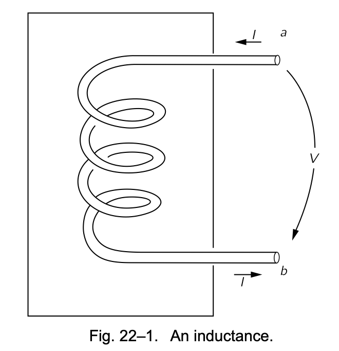
이런 가정은 이상적인 인덕턴스를 의미한다. (나중에 다시 돌아와서 실제 인덕턴스에서 무슨 일이 일어나는지 논의할 것이다.) 이상적인 인덕턴스 양단에 걸리는 전위를 구해보자. 인덕턴스에 전류가 흐르면, 전류에 비례하는 자기장이 코일 내부에 발생한다. 이제 그림 13.1 에서 다음과 같은 경로를 생각하자 : \(a\) 단자에서 시작하여 코일을 따라(항상 와이어 내부에 머무르며) \(b\) 단자 까지 이동한 뒤, 인덕턴스 외부 공간의 공기를 통해 단자 \(b\) 에서 단자 \(a\) 로 돌아간다. 이 닫힌 경로를 에 대한 \(\boldsymbol{E}\) 의 선 적분은 두 부분의 합으로 표현될 수 있다:
\[ \oint \boldsymbol{E\cdot} d\boldsymbol{l} = \underset{\text{coil}}{\underset{\text{via}}{\int_a^b}} \boldsymbol{E\cdot} d\boldsymbol{l} + \underset{\text{outside}}{\int_a^b} \boldsymbol{E\cdot} d\boldsymbol{l}. \tag{13.2}\]
이미 알고 있듯이 완전한 도체 내부에는 전기장이 존재하지 않는으므로 코일을 통한 \(a\) 에서 \(b\) 까지의 적분은 \(0\) 이다. \(\boldsymbol{E}\) 의 선적분에 기여하는 것은 단자 \(b\) 에서 단자 \(a\) 까지의 인덕턴스 외부 경로에 대한 적분이다. 우리는 상자 외부 공간에 자기장이 없다고 가정했으므로, 이 부분의 적분은 경로와 독립적이며 두 단자의 퍼텐셜, 즉 전위차 \(V\) 를 정할 수 있다.
\[ V = −\int_a^ b \boldsymbol{E\cdot} d\boldsymbol{l} =−\oint \boldsymbol{E\cdot} d\boldsymbol{l} \]
여기서 코일의 인덕턴스 \(L\) 에 대해 기전력 \(\mathcal{E} = \oint\boldsymbol{E\cdot} d\boldsymbol{l} = -L (dI/dt)\) 을 생각하면
\[ V = - \mathcal{E} = (i\omega)LI. \tag{13.3}\]
이상적인 인덕턴스를 설명한 위와 같은 방식은 일반적으로 다른 이상적인 회로 요소를 다루는 방식을 보여준다. 요소의 특성은 단자에 나타나는 전류와 전압을 기준으로 완전히 설명된다. 적절한 근사를 통해 회로 요소 내부에 나타나는 장들들의 큰 복잡성을 무시할 수 있다. 내부에서 일어나는 일과 외부에서 일어나는 일 사이에 구분이 이루어진다.
모든 회로 요소에 대해 우리는 식 13.3 에 있는 것과 같은 관계를 찾게 됩니다. 전압이 전류에 비례하고, 일반적으로 복소수인 비례 상수를 갖는 경우. 이 복소 비례 계수를 임피던스 (impedence) 라고 하며 보통 \(z\) 로 표기한다. 일반적으로 임피던스는 진동수 \(\omega\) 의 함수이다. 즉
\[ z = \dfrac{V}{I} = \dfrac{\hat{V}}{\hat{I}}. \tag{13.4}\]
인덕턴스의 경우
\[ z(\text{인덕턴스})=z_L=i\omega L. \tag{13.5}\]
축전기
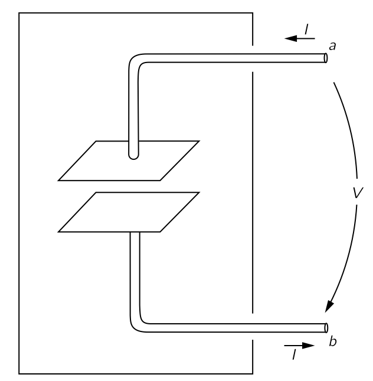
이제 같은 관점으로 축전기를 살펴보자. 축전기는 두 개의 전도성 판과 각각의 판을 터미널과 잇는 두 개의 전선으로 구성된다(그림 13.2). 판은 어떤 형태든 될 수 있으며, 종종 유전체에 의해 분리되어 있다. 다시 몇 가지 가정을 하자.
- 판과 전선이 완벽한 전도체라고 가정한다.
- 판 사이의 절연은 완벽히며 한 판에서 다른 판으로 절연을 가로질러 전하가 흐르지 않는다.
- 두 도체가 서로 가깝지만 다른 모든 도체와는 멀리 떨어져 있으므로, 하나의 판을 떠나는 모든 전기장은 다른 판을 향한다. 따라서 두 판에는 크기가 같고 극성이 반대인 전하가 존재하며, 판에 있는 전하는 인입 전선 표면의 전하보다 훨씬 크다.
- 축전기 근처에 자기장이 없다.
이제 \(\boldsymbol{E}\) 의 선 적분을 세 부분으로 나누어 생각하자.
\[ \oint \boldsymbol{E \cdot}\,d\boldsymbol{l} = \underset{\text{along wires}}{\int_a^b} \boldsymbol{E\cdot}\,d\boldsymbol{l} + \underset{\text{plate}}{\int} \boldsymbol{E\cdot} \,d\boldsymbol{l} + \underset{\text{outside}}{\int_a^b}\boldsymbol{E\cdot}\,d\boldsymbol{l}. \tag{13.6}\]
완전 전도체 내부에는 전기장이 없기 때문에 전선을 따르는 적분은 0 이다. 축전기 외부의 \(b\) 에서 \(a\) 까지의 적분은 단자 간 전위 차이의 음수와 같다. 우리가 두 판이 어느 정도 세계의 나머지와 격리되어 있다고 상상했으므로, 두 판의 총 전하는 \(0\) 이어야 한다. 만약 상부 판에 전하 \(Q\) 가 존재한다면, 하부 판에는 동일한 양의 반대 극성 전하 \(−Q\) 가 존재한다. 판 사이의 전위 차이는 \(Q/C\) 이며 식 13.6 에서 \(a\) 와 \(b\) 단자 사이의 전위차는 판 사이의 전위차와 같다. 따라서
\[ V=Q/C. \]
전류 \(I\) 가 단자 \(a\) 를 통해 축전기에 들어오고 단자 b를 통해 나간다면 \(I=dQ/dt\) 는 플레이트상의 전하의 변화율이다. \(dV/dt = i\omega V\) 이므로 축전기의 전압‐전류 관계는
\[ i\omega V=\dfrac{I}{C}, \]
또는
\[ V=\dfrac{I}{i\omega C}. \tag{13.7}\]
이제 축전기의 임피던스 z는
\[ z(\text{축전기})=z_C=\dfrac{1}{i\omega C}. \tag{13.8}\]
저항
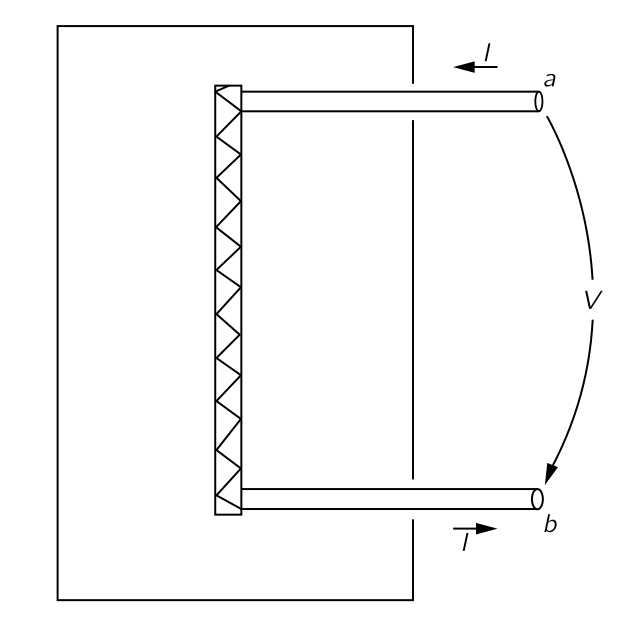
세 번째로 저항을 보자. 아직 실제 재료의 전기적 특성을 논의하지 않았으므로, 실제 도체 내부에서 일어나는 일에 대해 논의할 준비가 아직 되지 않았다. 우리는 전기장이 실제 물질 내부에 존재할 수 있다는 사실과, 이러한 전기장이 전하 흐름, 즉 전류를 발생시켜 그 전류가 도체의 한쪽 끝에서 다른 쪽 끝까지의 전기장 적분에 비례한다는 사실을 받아들여야 한다. 이후 그림 13.3 과 같이 구성된 이상적인 저항을 상상한다.
완전 도체로 볼 수 있는 두 개의 전선은 단자 \(a\) 와 \(b\) 에서 저항성 재료 막대의 양쪽 끝까지 연결된다.
\(a\) 와 \(b\) 단자 사이의 전위 차이는 외부 전기장의 선적분과 같으며, 이는 저항성 물질 막대를 통한 전기장의 선적분과도 동일하다. 그 결과, 저항을 통과하는 전류 \(I\) 는 단자 전압 \(V\) 에 비례한다. \[ I=VR. \]
여기서 \(R\) 을 저항 (resistance) 이라고 한다. 나중에 실제 전도성 물질에서 전류와 전압 사이의 관계가 대략적으로 선형이라는 것을 알게 될 것이다.
우리는 또한 이 근사적인 비례성이 전류와 전압의 진동수 빈도와는 무관할 것으로 예상하며, 이는 주파수가 너무 높지 않을 경우에만 해당한다.
교류 전류의 경우, 저항을 가로지르는 전압은 전류와 위상이 맞으며, 이는 임피던스가 실수임을 의미한다.
\[ z(\text{저항})=z_R=R. \tag{13.9}\]
수동 소자
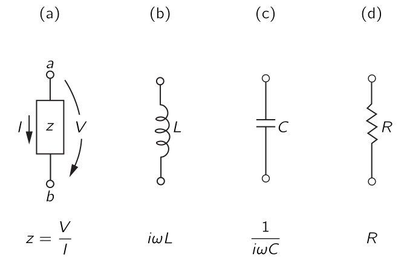
지금까지 살펴본 세 회로 요소-인덕터, 축전지, 저항-에 대해 그림 13.4 에 요약하였다. 이 그림과 앞선 그림들에서도 전압은 한 단자에서 다른 단자를 가리키는 화살표로 표시되었다. 전압이 양수인 경우—즉, 단자 \(a\) 가 단자 \(b\) 보다 높은 전위에 있는 경우—화살표는 양의 “전압 강하” 방향을 나타낸다.
우리는 교류에 대해 이야기하고 있지만, 진동수 \(\omega \to 0\) 극한을 취함으로써 정상 전류를 가진 회로의 특수한 경우를 포함시킬 수 있다. 진동수가 0인 경우—즉, 직류의 경우—인덕턴스의 임피던스가 \(0\) 이 되며, 이는 단락 회로가 된다. 직류에서는 축전지의 임피던스가 무한대로 올라가며, 이는 개방 회로가 된다. 저항기의 임피던스는 주파수와 무관하므로, 직류 회로를 분석할 때 남은 유일한 요소이다.
지금까지 설명한 회로 소자에서는 전류와 전압이 서로 비례한다. 우리는 보통 다음과 같은 용어로 생각합니다: 적용된 전압은 전류를 책임지며, 전류는 단자 전체에 전압을 유도한다. 이는 어느 정도 소자들은 적용된 외부 조건에 반응한다 의미이므로 이런 소자들을 수동소자 (passive element) 라고 부른다. 다음 절에서 검토할 발전기와 같은 능동소자와 대비될 수 있다.
마지막으로 수동소자의 임피던스를 요약하면 다음과 같다. \[ \boxed{z_R = R,\qquad z_L = i\omega L,\qquad z_C = 1/i\omega C.} \tag{13.10}\]
\(\textrm{II}\).22–2 발전기
이제 우리는 전류와 전압의 원천인 능동 소자 (active element) 인 발전기에 대해 알아본다.
발전기 타입 1 : 회전하는 자기장과 고정된 코일
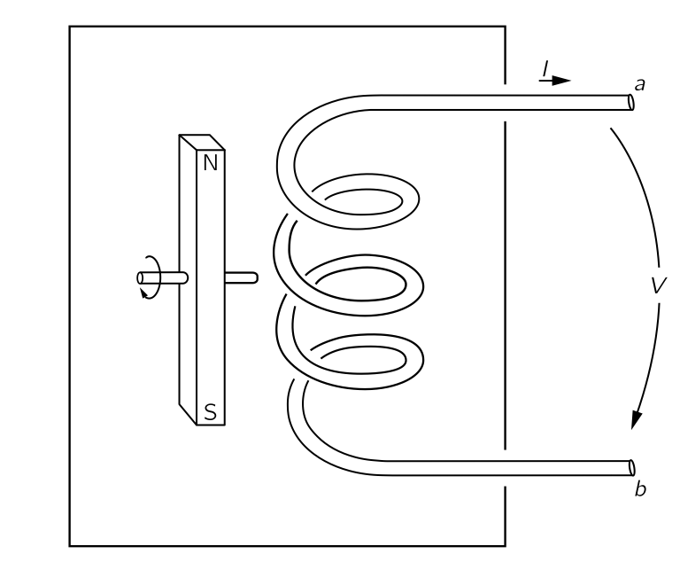
인덕턴스와 같은 코일이 있지만 회전이 매우 적다고 가정하면, 그 자체 전류의 자기장을 무시할 수 있다. 그러나 이 코일은 그림 13.5 에서와 같이 회전하는 자석에 의한 변화하는 자기장 안에 놓여 있다. (우리는 앞서 이러한 회전 자기장이 교류가 있는 적절한 코일 세트에 의해 생성될 수 있음을 확인했다.) 다시 한 번 우리는 몇 가지 문제를 단순화하는 가정을 해야 한다. 이 가정들은 모두 인덕턴스 경우에 나온 것이다. 특히, 변동하는 자기장이 코일 주변의 특정 영역에 제한되어 있으며, 단자 사이의 공간에서 발전기 외부에 나타나지 않는다고 가정한다.
인덕턴스에서와 같이 단자 \(a\) 에서 시작하여 코일을 거쳐 단자 \(b\) 까지, 그리고 두 단자 사이의 공간에서 시작점으로 돌아오는 완전한 루프에 대한 \(\boldsymbol{E}\) 의 선적분을 생각한다. 다시 한 번, 우리는 단자 간 전위 차이가 루프를 중심으로 E의 전체 선 적분과 동일하다고 결론합니다:
\[ V=−\oint \boldsymbol{E\cdot}\,d\boldsymbol{l}. \]
이 선 적분은 회로의 기전력과 동일하므로, 발전기의 단자 간 전위 차 \(V\) 는 코일을 연결하는 자기 플럭스 \(\Phi_B\) 의 변화율과 동일하다: \[ V=−\mathcal{E}= \dfrac{d}{dt}\Phi_B. \tag{13.11}\]
이상적인 발전기의 경우, 코일에 대한 자기 플럭스는 회전하는 자기장의 각속도와 같은 외부 조건에 의해 결정되며, 발전기를 통과하는 전류에 의해 어떠한 방식으로도 영향을 받지 않는다고 가정한다. 따라서 적어도 우리가 고려하고 있는 이상적인 발전기는 임피던스가 아니다. 그 말단에 걸친 전위 차이는 임의로 할당된 기전력 \(\mathcal{E}(t)\) 에 의해 결정된다. 이러한 이상적인 발전기는 그림 13.6 에 표시된 기호로 표현된다. 작은 화살표는 양수일 때의 기전력의 방향을 나타냅니다. 그림 13.6 의 발전기는 단자 \(a\) 가 단자 \(b\) 보다 \(V=\mathcal{E}\) 만큼 높은 전위를 가진다.
발전기 타입 2 : 고정된 자기장과 회전하는 코일
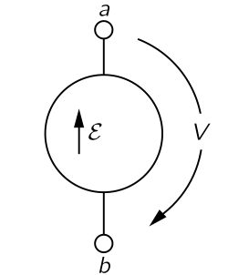
방금 설명한 것과는 내부적으로는 매우 다르지만 단자 밖에서는 구별할 수 없는 또 다른 형태의 발전기가 있다. 그림 13.7 에 표현된 바와 같이 고정된 자기장 안에서 회전하는 와이어 코일이 있다고 하자. 막대 자석이 내부의 자기장을 생성한다. 물론, 이는 일정한 전류를 전달하는 추가 코일과 같이 일정한 자기장의 다른 원천으로 대체될 수 있다. 그림에 표시된 바와 같이, 회전하는 코일은 슬라이딩 접점 또는 슬립 링을 통해 외부 세계와 연결된다. 우리는 두 단자 \(a\) 와 \(b\) 사이에 나타나는 전위 차이에 관심이 있다. 이는 물론 발전기 외부 경로를 따라 단자 \(a\) 에서 단자 \(b\) 까지의 전기장의 적분이다.
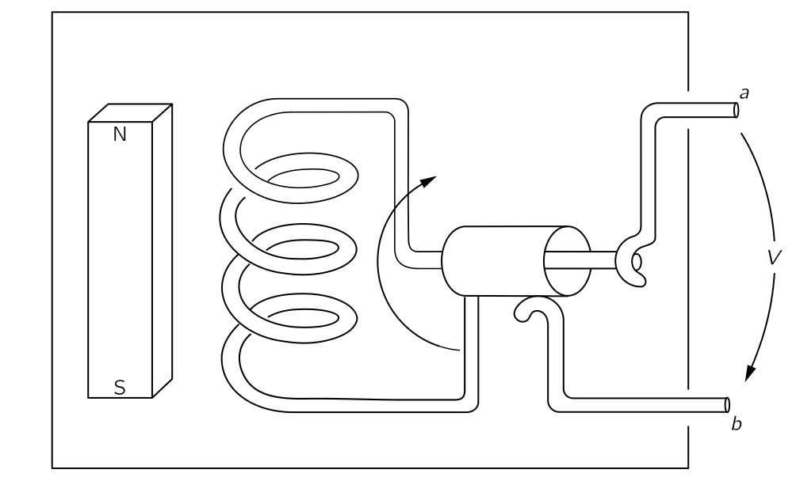
그림 13.7 의 시스템에서는 변하는 자기장이 존재하지 않으므로, 처음에는 발전기 단자에 전압이 어떻게 나타날 수 있는지 궁금해 할 수 있다. 사실, 발전기 내부 어디에도 전기장이 없다. 우리는 평소와 같이 이상적인 소자에 대해 내부의 전선이 완전 전도성 물질로 만들어졌다고 가정하고 있으며, 여러 차례 말했듯이, 완전 도체 내부의 전기장은 0 이라고 가정하였다. 하지만 그것은 도체가 자기장 안에서 움직이고 있을 때는 사실이 아니다. 진정한 명제는 완전 도체 내부의 모든 전하에 대한 전체 힘이 0이어야 한다 는 것이다. 그렇지 않으면 자유 전자가 무한히 흐르게 될 것이다. 따라서 언제나 참인 것은 도체 내에서 로렌츠 힘은 항상 \(0\) 이다.
\[ \dfrac{\boldsymbol{F}}{\text{단위 전하}} = \boldsymbol{E} + \boldsymbol{v} \times \boldsymbol{B} = \boldsymbol{0}\qquad (\text{완전한 도체 내부에서}). \tag{13.12}\]
완전 도체 내부에 전기장이 없다는 앞서의 명제는 도체의 속도 \(\boldsymbol{v}\) 가 0 이면 모두 옳으며, 그렇지 않은 경우 올바른 명제는 식 13.12 에 의해 제시된다.
그림 13.7 의 발전기로 돌아가면, 이제 우리는 발전기의 전도 경로를 통해 단자 \(a\) 에서 단자 \(b\) 까지의 전기장 \(\boldsymbol{E}\) 의 선적분이 동일한 경로상의 \(\boldsymbol{v}\times \boldsymbol{B}\) 의 선적분과 같아야 함을 알 수 있다.
\[ \underset{\text{conductor}}{\underset{\text{inside}}{\int_a^b}} \boldsymbol{E\cdot}\,d\boldsymbol{l}=−\underset{\text{conductor}}{\underset{\text{inside}}{\int_a^b}} (\boldsymbol{v}\times \boldsymbol{B})\boldsymbol{\cdot} \, d\boldsymbol{l}. \tag{13.13}\]
그러나 전체 루프에 대한 \(\boldsymbol{E}\) 의 선적분은 발전기 밖에서의 \(b\) 에서 \(a\) 로의 선적분을 포함하며, 변동하는 자기장이 없기 때문에 반드시 \(0\) 이어야 한다.(\(\nabla \times \boldsymbol{E}=-\partial \boldsymbol{B}/\partial t\) 를 생각하라.) 따라서 식 13.13 의 첫 번째 적분은 또한 두 단자 사이의 전압인 \(V\) 와 같다. 식의 오른쪽 적분이 밝혀졌다. 식 13.13 은 코일을 통과하는 플럭스의 변화율에 불과하며, 따라서 플럭스 규칙에 따라 코일 내의 기전력과 같으며 이는 식 13.11 과 일치한다. 고정된 코일 근처에서 자기장이 변하는 발전기이든, 코일이 고정된 자기장 안에서 움직이는 발전기이든, 발전기의 외부 특성은 동일하다. 단자 전체에 전압 차이 \(V\) 가 존재하며, 이는 회로의 전류와는 무관하지만 발전기 내부의 된 조건에만 의존한다.
발전기 타입 3 : 화학전지
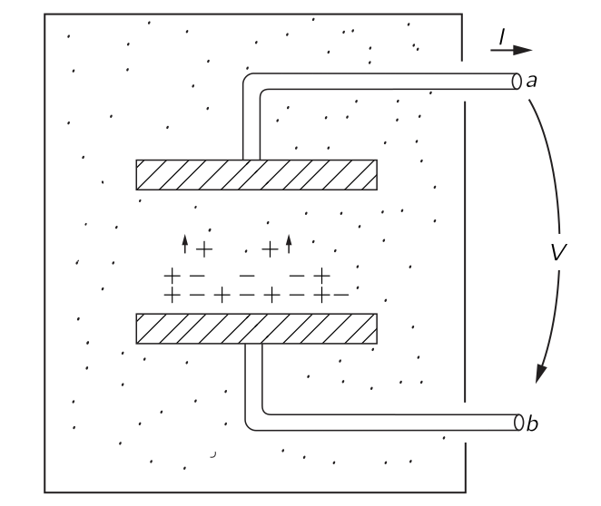
지금까지 맥스웰 방정식의 관점에서 발전기의 작동을 이해하려고 노력했지만, 손전등 배터리와 같은 일반적인 화학 셀에 대해서도 물어볼 수 있다. 이 역시 발전기, 즉 전압원지만, 직류 회로에만 등장한다. 가장 이해하기 쉬운 종류의 셀은 식 13.7 에 표현되어 있다. 화학 용액에 담겨 있는 두 개의 금속 판을 상상하자.
- 이 용액에 양이온과 음이온이 포함되어 있으며, 이 가운데 한 종류의 이온, 예를 들어 음이온이 양이온보다 훨씬 무겁다고 가정한다. 따라서 확산 과정을 통해 용액을 통과하는 움직임이 훨씬 느리다.
- 어떤 방법이든 용액의 농도가 균일하지 않아 예를 들어 하부 판 근처에 있는 양쪽 극성의 이온 수가 상부 판 근처의 이온 농도보다 훨씬 많다고 가정한다.
양전하의 빠른 이동도(mobility)로 인해 양이온은 농도가 낮은 영역으로 더 쉽게 이동하게 되며, 그 결과 상부 판에 도달하는 양전하가 약간 과잉된다. 상부 판은 양전하를 띠게 되고 하부 판은 순음전하를 띠게 됩니다.
점점 더 많은 전하가 상부 판으로 확산됨에 따라, 이 판의 전위가 상승하여 판들 사이에 발생하는 전기장이 이온에 힘을 가해 과도한 이동성을 보상하게 되며, 따라서 셀의 두 판은 내부 구조로부터 정해지는 특징정인 전위차에 빠르게 도달한다.
이상적인 축전지를 다룰 때 본 바와 같이, 우리는 단자 \(a\) 와 \(b\) 사이의 전위 차이가 이온의 순확산이 더 이상 없을 때 두 판 사이의 전기장의 선적분과 동일함을 확인할 수 있다. 물론, 축전지와 그러한 화학전지 사이에는 본질적인 차이가 있다. 축전지의 단자를 잠시 단락하면 방전되어 단자 간 전위 차이가 더 이상 존재하지 않게 된다. 화학 셀의 경우, 전류를 단자에서 지속적으로 끌어올 수 있으며, 기전력은 (셀 내부의 화학 물질이 소진될 때까지는) 전혀 변하지 않는다. 실제 셀에서는 셀에서 끌어온 전류가 증가함에 따라 단자 간 전위 차이가 감소하게 된다. 우리는 단자를 가로지르는 전압이 전류와 독립적인 이상적인 전지를 상상할 수 있다. 실제 셀은 저항기와 직렬로 존재하는 이상적인 셀로 볼 수 있다.
\(\mathrm{I}\).22–3 이상적인 소자들의 연결과 키르히호프 규칙.
회로 분석
앞에서 보았듯이, 이상적인 회로 소자를 그 소자 외부에서 발생하는 것으로 설명하는 것은 매우 간단하다. 전류와 전압은 선형적으로 관련되어 있다. 하지만 소자 내부에서 실제로 일어나고 있는 일은 상당히 복잡하며, 맥스웰 방정식을 기준으로 정확한 설명을 제공하기는 상당히 어렵다. 수백 개의 저항기, 커패시터 및 인덕터가 포함된 라디오 내부의 전기 및 자기장을 정확히 설명하려고 시도한다는 것을 상상해 보라. 맥스웰 방정식을 사용하여 그런 것을 분석하는 것은 불가능하다. 하지만 \(\mathrm{II}\).22–2 발전기 에서 설명한 많은 근사와 실제 회로 소자의 본질적 특성을 이상화시켜 요약함으로써 전기 회로를 비교적 간단한 방식으로 분석하는것이 가능하다. 이제 그 방법을 알아보자.
총 전압 강하
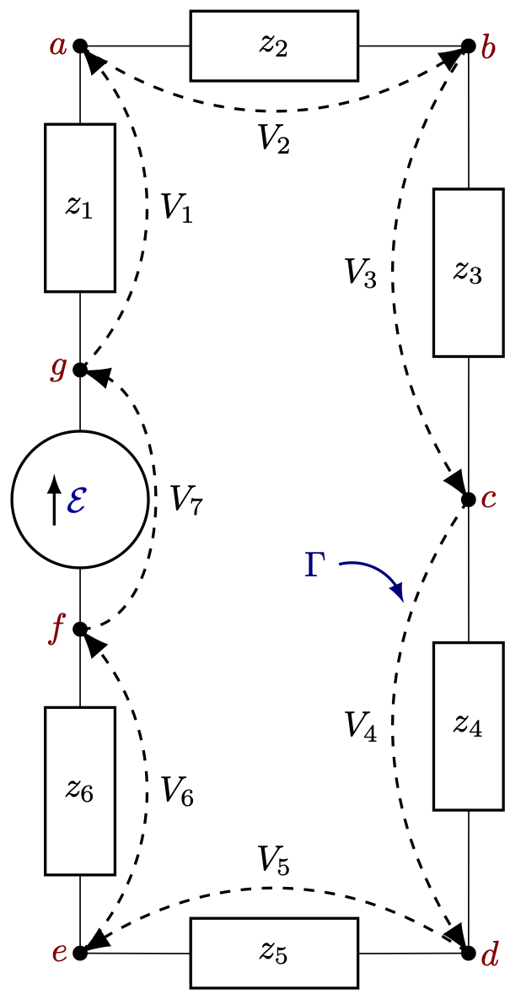
그림 13.9 와 같이 발전기와 여러 임피던스가 서로 연결된 회로가 있다고 가정하자.개별 회로 소자 외부 영역에는 자기장이 없다(고 가정하고 근사한다). 따라서 소자를 통과하지 않는 모든 곡선에 대한 \(\boldsymbol{E}\) 의 선적분은 0 이다. 그럼 회로를 전체적으로 감싸는 파선으로 표시된 곡선 \(\Gamma\) 를 생각하자. 이 곡선에 대한 \(\boldsymbol{E}\) 의 선적분은 여러 조각으로 구성되어 있다. 각 조각은 회로 요소의 한 단자에서 다른 단자까지의 선적분이다. 이 선적분은 우리가 소자를 통과하는 데 대한 전압 강하라고 부르는 그것이다. 전체 선적분은 회로 내 모든 소자에 걸친 전압 강하의 합에 불과하다:
\[ \oint \boldsymbol{E\cdot}\,d\boldsymbol{l} = \sum V_n. \]
전체 선 적분이 \(0\) 이므로, 회로 전체 루프 주변의 전위 차이의 합이 \(0\) 이라고 할 수 있다:
\[ \sum_{\text{around any loop}} V_n=0. \tag{13.14}\]
이 결과는 맥스웰 방정식 중 하나의 결론이다.
노드를 통과하는 전류
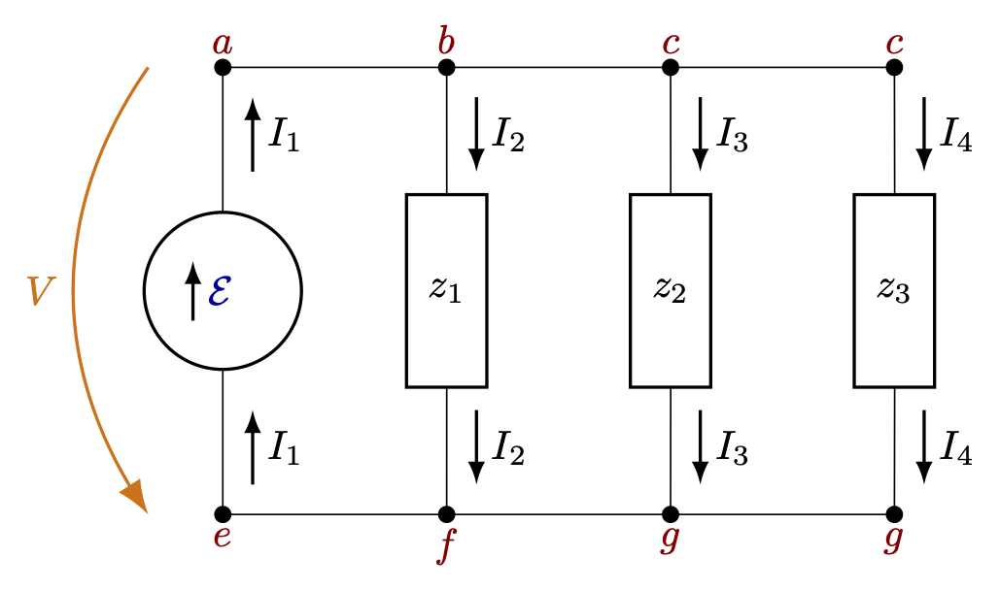
이제 그림 13.10 에 표현된 것과 같은 회로를 생각한다. 단자 \(a\), \(b\), \(c\), \(d\) 를 연결하는 수평선은 이들 단자가 모두 연결되어 있거나 저항이 거의 없는 전선으로 연결되어 있음을 나타낸다. 어쨌든, 도면은 단자 \(a\), \(b\), \(c\), \(d\) 가 모두 동일한 전위에 있으며, 마찬가지로 단자 \(e\), \(f\), \(g\), \(h\) 도 동일한 공통 전위에 있음을 의미한다. 그렇다면 네 개의 소자 각각에 대한 전압 강하 \(V\) 는 동일하다.
현재 우리의 이상화 중 하나는 임피던스의 단자에 축적되는 전하는 무시할 만 하다는 것이다. 우리는 이제 단자를 연결하는 전선에 있는 모든 전하도 무시될 수 있다고 가정한다. 그렇다면 전하 보존에 따라 한 회로 요소를 떠나는 모든 전하는 즉시 다른 회로 요소로 들어가야 한다. 즉 주어진 모든 노드에 들어가는 전류들의 대수적 합이 0이어야 한다. 노드란 \(a\), \(b\), \(c\), \(d\) 와 같은 연결된 모든 단자 집합을 의미한다.
\[ I_1 − I_2 − I_3 − I_4 = 0. \tag{13.15}\]
\(e\), \(f\), \(g\), \(h\) 네 개의 단자로 구성된 노드에 들어가는 전류의 합도 0 이어야 한다:
\[ −I_1 + I_2 + I_3 + I_4 = 0. \tag{13.16}\]
이는 물론 식 13.15 와 동일하다. 두 방정식은 독립적이지 않다. 일반적인 규칙은 모든 노드에 대한 전류의 합이 0이어야 한다는 것이다:
\[ \sum_{\text{into a node}} I_n = 0. \tag{13.17}\]
키르히호프의 규칙
앞서 폐쇠 루프에 대한 전압 강하와 노드에 대한 전류의 결론을 요약한 것이 키르히호프의 규칙 (Kirchhoff’s rules) 이다.
예제 13.1 (회로 분석 1)
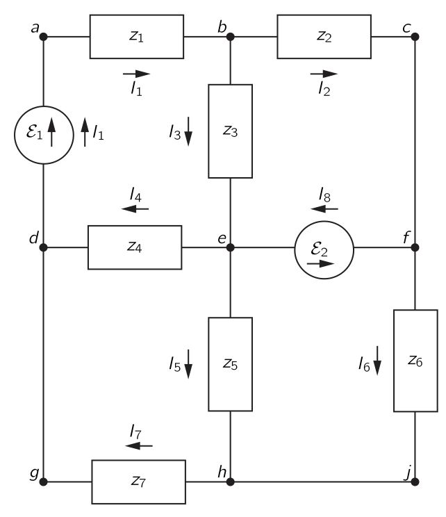
그림 13.11 과 같은 보다 복잡한 회로를 분석해보자. 이 회로에서 전류와 전압을 어떻게 알 수 있을까? 회로에 나타나는 네 개의 부수적인 폐쇄 루프 각각을 별도로 생각하자. 예를 들어, 단자 \(a\), \(b\), \(e\), \(d\) 로 이루어진 부수적인 루프. 각 루프에 대해 키르히호프의 제 1 규칙을 적용한다. 전류 방향으로 가는 경우 전압 강하는 양수이며, 전류와 반대 방향으로 요소를 가로지르는 경우 전압 강하는 음수가 된다. 또한 발전기에 대한 전압 강하는 그 방향의 기전력의 음수임을 기억해야 한다. 따라서 \(a\) 끝에서 시작하고 끝나는 작은 루프를 고려하면 아래의 식이 성립한다.
\[ z_1 I_1 + z_3 I_3 + z_4 I_4−\mathcal{E}_1=0. \]
같은 규칙을 남은 루프에 적용하면, 같은 종류의 방정식을 세개 더 얻을 수 있다.
다음으로, 회로의 각 노드에 대해 키르히호프의 제 2 구칙을 적용한다. 예를 들어 단자 \(b\) 에 있는 노드에 전류를 합산하면 다음 방정식이 된다.
\[ I_1 − I_3 − I_2 = 0. \]
마찬가지로, \(e\) 노드에 대해서는
\[ I_3 − I_4 + I_8 − I_5 = 0. \]
주어진 회로에 대해 이러한 전류 방정식이 다섯 개 있지만 이것들은 서로 독립적인 것이 아니며 독립적인 방정식은 네 개 뿐이다. 따라서 우리는 총 8개의 독립적인 선형 방정식을 갖게 된다. 전압 방정식 네 개와 전류 방정식 네 개. 이 여덟 개의 방정식을 사용하면 우리는 여덟 개의 미지의 전류를 해결할 수 있고 전류가 알려지면 회로가 해결된다. 미리 주어지는 전압원을 제외한 어떤 소자에 가해지는 전압 강하는 해당 요소를 흐르는 전류에 그 임피던스를 곱함으로써 얻을 수 있다.
방정식을 작성할 때, 다른 방정식들과 독립적이지 않은 하나의 방정식을 얻는다는 것을 확인했다. 일반적으로 전압 방정식을 지나치게 많이 적는 것도 가능하다. 예를 들어, 그림 13.11 의 회로에서는 네 개의 작은 루프만을 고려했지만 전압 방정식을 작성할 수 있는 다른 루프-예를 들어 경로 \(abcfeda\) 를 따르는 루프-가 하나 이상 존재 할 수 있다. 복잡한 회로를 분석할 때는 너무 많은 방정식을 얻기가 매우 쉽다. 최소 수의 방정식만 적도록 진행하는 방법을 알려주는 규칙이 있지만, 보통 약간의 생각만으로도 가장 간단한 형태로 올바른 수의 방정식을 얻는 방법을 알 수 있다. 게다가, 추가 방정식을 하나 또는 두 개 작성하는 것은 해가 되지 않는다. 그들은 오답을 초래하지 않을 것이며, 여분의 불필요한 계산을 요구할 뿐이다.
예제 13.2 (회로 분석 2)
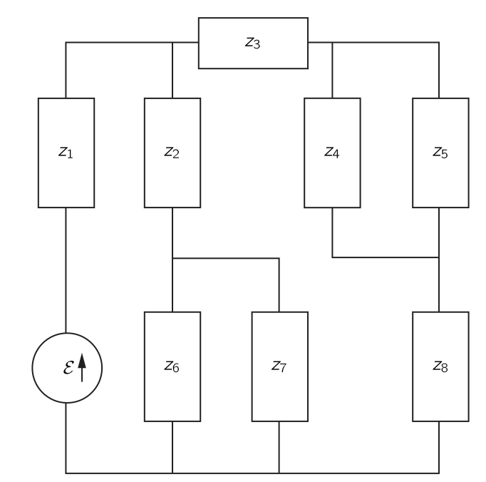
\(\mathrm{I}\).25 선형 시스템 에서 우리는 두 임피던스 \(z_1\) 과 \(z_2\) 가 직렬일 경우, 아래와 같이 주어진 단일 임피던스 \(z_s\) 와 동등함을 보였다.
\[ z_s = z_1 + z_2. \tag{13.18}\]
또한 두 임피던스가 병렬로 연결될 경우에는 아래와 같은 단일 임피던스 \(z_p\) 와 동등함을 보였다.
\[ z_p = \dfrac{1}{1/z_1 + 1/z_2} = \dfrac{z_1 z_2}{z_1+z_2}. \tag{13.19}\]
돌이켜보면 이결과를 유도할 때 사실상 키르히호프의 규칙을 사용하고 있었다. 복잡한 회로를 직렬 및 병렬 임피던스 공식을 반복적으로 적용함으로써 분석하는 것이 종종 가능하다. 예를 들어, 그림 13.12 의 회로. 우선, 임피던스 \(z_4\) 와 \(z_5\) 는 그들의 병렬 등가값으로 대체될 수 있으며, \(z_6\) 과 \(z_7\) 도 마찬가지다. 그렇다면 임피던스 \(z_2\) 는 직렬 규칙에 따라 \(z_6\) 및 \(z_7\) 의 병렬 등가값과 결합될 수 있다. 이와 같이 진행하면 전체 회로를 단일 임피던스 \(Z\) 를 가진 직렬 발전기로 축소할 수 있다. 그때 발전기를 통과하는 전류는 단순히 \(\mathcal{E}/Z\) 가 된다. 그런 다음 역방향으로 작업함으로써 각 임피던스의 전류를 구할 수 있다.
예제 13.3 (회로 분석 3)
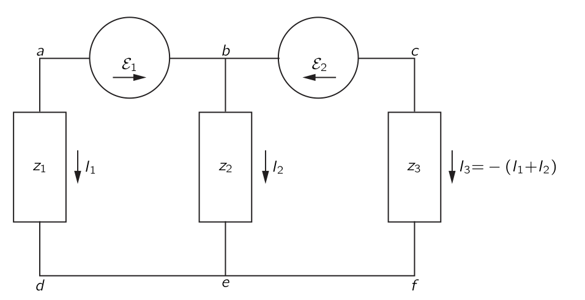
그림 13.13 의 회로는 예제 13.2 의 방법으로는 분석할 수 없는 꽤 단순한 회로의 예이다. 이 회로를 분석하려면 키르히호프의 규칙에서 전류와 전압 방정식을 적어야 한다. 현재 방정식은 하나뿐입니다:
\[ I_1 + I_2 + I_3 = 0. \]
이로부터
\[ I_3 = −( I_1 + I_2). \]
우리는 전압 방정식을 작성할 때 이 결과를 즉시 활용하면 계산을 절약할 수 있다. 이 회로에는 두 개의 독립적인 전압 방정식이 있다.
\[ −\mathcal{E}_1 + I_2 z_2 − I_1 z_1 = 0, \qquad \mathcal{E}_2−( I_1 + I_2 ) z_3 − I_2 z_2=0. \]
두 개의 방정식과 두 개의 미지의 전류가 있다. \(I_1\) 과 \(I_2\) 에 대한 이 방정식들을 풀면,
\[ I_1 = \dfrac{z_2 \mathcal{E}_2 − ( z_2 + z_3 ) \mathcal{E}_1}{z_1 ( z_2 + z_3 ) + z_2 z_3}, \tag{13.20}\]
그리고
\[ I_2 = \dfrac{z_1\mathcal{E}_2 + z_3\mathcal{E}_1}{z_1(z_2 + z_3) + z_2z_3}. \tag{13.21}\]
세 번째 전류는 이 두 개의 합으로부터 얻을 수 있다.
예제 13.4 (회로 분석 4)
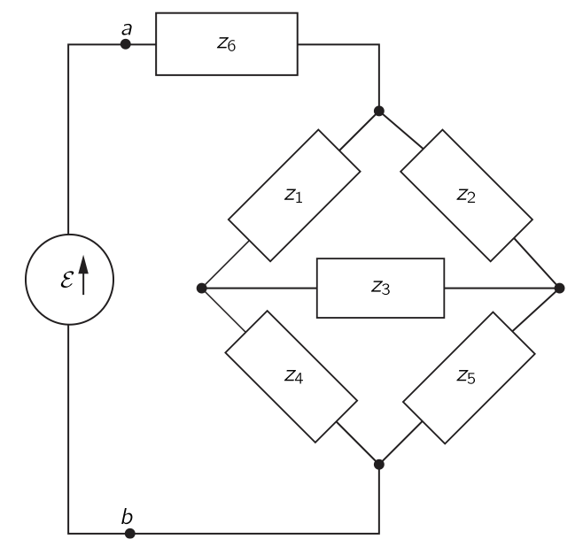
직렬 및 병렬 임피던스 규칙을 사용하여 분석할 수 없는 회로의 또 다른 예는 그림 13.14 에 표현되어 있다. 이런 회로를 ‘브리지’ 라고 한다. 임피던스를 측정하는 데 사용되는 많은 기기에서 사용된다. 이러한 회로에서는 보통 다음과 같은 질문에 관심을 갖게 된다: 임피던스 \(z_3\) 를 통과하는 전류가 0 이 될 경우, 다양한 임피던스는 어떻게 관련되어야 하는가? 이것은 독자에게 맡긴다.
\(\mathrm{II}\).22-4 등가 회로
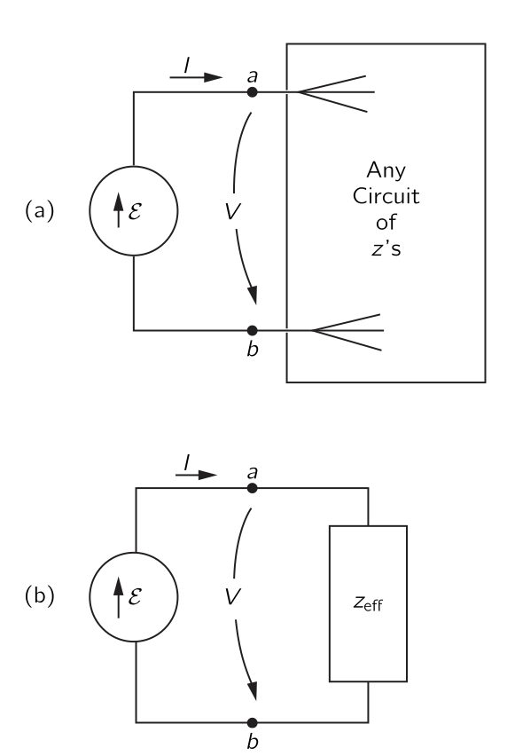
그림 13.15 (a) 에 표현된 바와 같이, 복잡한 임피던스 내부 연결을 포함하는 회로에 발전기 \(\mathcal{E}\) 를 연결한다고 가정하자. 키르히호프의 규칙으로부터 얻는 모든 방정식은 선형이며, 따라서 발전기를 통해 전류 \(I\) 에 대해 풀면
\[ I=\dfrac{\mathcal{E}}{z_\text{eff}}. \]
여기서 \(z_\text{eff}\) 는 회로의 모든 원소들의 대수적 함수인 복소수이다. 회로에 표시된 것 외에 다른 발전기가 없을 경우, \(\mathcal{E}\) 에 독립적인 추가 항은 존재하지 않는다. 하지만 이 방정식은 그림 13.15 (b) 의 회로와 같다. 두 단자 \(a\) 와 \(b\) 의 왼쪽에서 일어나는 일에만 관심을 갖는 한, 그림 13.15 의 두 회로는 동일하다. 따라서 우리는 모든 2단자 수동 소자 네트워크를 회로의 나머지 전류와 전압을 변경하지 않고 단일 임피던스 \(z_\text{eff}\) 로 대체할 수 있다. 이 사실은 키르히호프의 규칙에서 나오는 것에 대한 주석일 뿐이며, 궁극적으로는 맥스웰 방정식의 선형성에서 비롯된다.
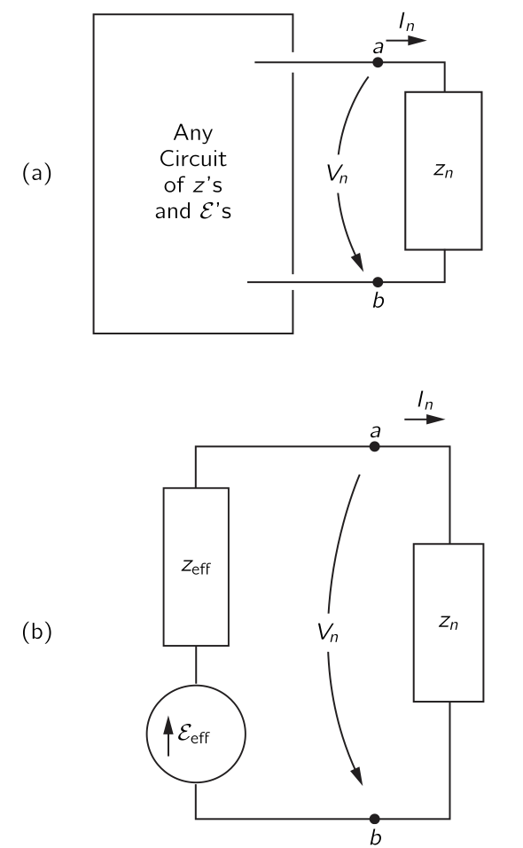
이 아이디어는 발전기와 임피던스를 모두 포함하는 회로에 일반화될 수 있다. 예를 들어 그림 13.16 (a)에서와 같이, 우리가 \(z_n\) 이라고 부르는 임피던스 중 하나의 관점에서 회로를 살펴본다고 가정하자. 전체 회로에 대한 방정식을 풀면, 두 단자 \(a\) 와 \(b\) 사이의 전압 \(V_n\) 이 \(I_n\) 의 선형 함수임을 알 수 있으며, 이를 다음과 같이 쓸 수 있다.
\[ V_n = A − B I_n. \tag{13.22}\]
여기서 \(A\) 와 \(B\) 는 터미널 왼쪽에 있는 회로의 발전기와 임피던스에 의존한다. 예를 들어 그림 13.13 의 회로에 대해 우리는 \(V_1 = I_1 z_1\) 임을 안다. 식 13.20 을 재배열함으로써
\[ V_1=\left[\left(\dfrac{z_2}{z_2+z_3}\right)\mathcal{E}_2 − \mathcal{E}_1\right] − \dfrac{z_2z_3}{z_2 + z_3}I_1. \tag{13.23}\]
을 얻는다. 완전한 해는 이 방정식을 임피던스 \(z_1\) 에 대한 방정식, 즉 \(V_1 = I_1 z_1\) 과 결합하거나 일반적인 경우에는 식 13.22 를 결합함으로써 얻을 수 있다.
\[ V_n = I_n z_n. \]
만약 지금 우리가 \(z_n\) 이 그림 13.16 (b) 와 같이 발전기와 임피던스의 단순 직렬 회로에 연결된다고 간주한다면, 방정식은 식 13.22 에 해당한다.
\[ V_n = \mathcal{E}_\text{eff} − I_n z_\text{eff}. \]
이는 \(\mathcal{E}_\text{eff}=A\) 와 \(z_\text{eff}=B\) 에 대해 식 13.22 와 동일하다. 따라서 단자 \(a\) 와 \(b\) 의 오른쪽에서 일어나는 일에만 관심이 있다면, 그림 13.16 의 회로는 임피던스를 갖는 직렬 발전기의 동등한 조합으로 언제든지 대체될 수 있다.
\(\mathrm{II}\).22-5 에너지
우리는 인덕턴스에서 전류 \(I\) 를 만들기 위해 외부 회로가 에너지 \(U=\frac{1}{2}LI^2\) 를 제공해야 함을 확인했다. 전류가 \(0\) 으로 되돌아가면, 이 에너지는 외부 회로로 다시 전달된다. 이상적인 인덕턴스에는 에너지 손실 메커니즘이 존재하지 않는다. 인덕턴스를 통해 교류가 흐르면, 에너지가 인덕턴스와 회로의 나머지 부분 사이를 오가며 흐르지만, 회로에 에너지가 전달되는 평균 속도는 \(0\) 입니다. 이때문에 인덕턴스를 비손실 소자(nondissipative element) 라고 부른다. 즉 전기 에너지가 손실되지 않는다.
마찬가지로, 축전지의 에너지인 \(U=\frac{1}{2}CV^2\) 는 축전지가 방전될 때 외부 회로로 반환된다. 축전지가 교류 회로에 있을 때 에너지가 그 안으로 들어와 밖으로 흐르지만, 각 사이클의 순수 에너지 흐름은 \(0\) 이다. 이상적인 축전지 역시 비손실 소자이다.
우리는 기전력이 에너지의 원천임을 알고 있다. 전류 \(I\) 가 기전력 방향으로 흐를 때, 에너지는 \(dU/dt=\mathcal{E}I\) 비율로 외부 회로에 전달된다. 전류가 회로의 다른 발전기에 의해 기전력에 반대로 구동되면, 기전력은 \(\mathcal{E}I\) 비율로 에너지를 흡수하게 된다. \(I\) 가 음수이므로 \(dU/dt\) 도 음수가 된다.
발전기가 저항 \(R\) 에 연결되면, 저항을 통과하는 전류는 \(I=\mathcal{E}/R\) 이다. \(\mathcal{E}I\) 비율로 발전기에 의해 공급되는 에너지는 저항기에 의해 흡수된다. 이 에너지는 저항에서 열로 변해가 회로의 전기 에너지로부터 손실된다. 우리는 전기 에너지가 저항에서 소멸된다고 말한다. 저항에서 에너지가 소멸되는 속도 \(dU/dt=RI^2\) 이단.
교류 회로에서 저항에 손실되는 에너지의 평균 속도는 한 사이클 동안의 \(RI^2\) 의 평균이다. \(I=\hat{I}e^{i\omega t}\) 한 사이클 동안 \(I^2\) 의 평균은 \(|\hat{I}|^2/2\) 이다.
발전기가 임의의 임피던스 \(z\) 에 연결될 때 에너지 손실은 어떻게 될까? (여기서 손실은 전기 에너지를 열 에너지로 변환하는 것을 의미한다.) 임피던스 \(z\) 는 실수부와 허수 부분의 합으로 표현될 수 있습니다.
\[ z=R+iX. \tag{13.24}\]
등가 회로의 관점에서 볼 때, 모든 임피던스는 저항(\(R\)) 과 순허수인 임피던스(\(X\) 이를 리액턴스(reactance) 라고 한다)의 직렬연결과 동등하다고 말할 수 있다(그림 13.17).
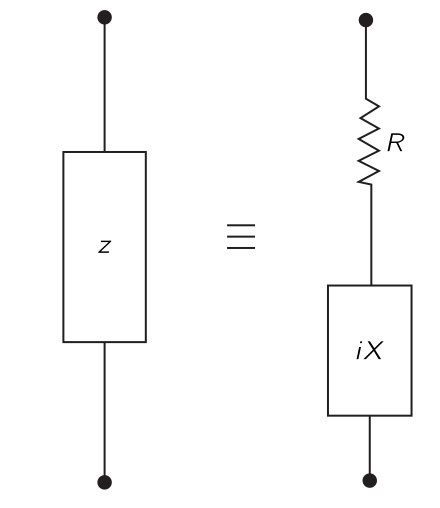
우리는 \(L\) 과 \(C\) 만을 포함하는 모든 회로는 허수 임피던스를 가진다는 것을 안다. 평균적으로 \(L\) 과 \(C\) 모두 에너지 손실이 없으므로, \(L\) 과 \(C\) 만을 포함하는 순수 리액턴스는 에너지 손실이 없다. 우리는 이것이 일반적인 리액턴스에 대해 반드시 사실임을 알 수 있다.
만약 기전력 \(\mathcal{E}\) 를 가진 발전기가 그림 13.17 의 임피던스 \(z\) 에 연결되어 있다면, 기전력과 발전기로부터의 전류 \(I\) 는 아래의 관계가 있다.
\[ \mathcal{E} = I(R+iX). \tag{13.25}\]
에너지가 전달되는 평균 속도를 찾기 위해, 우리는 \(\mathcal{E}I\) 의 평균을 구해야 한다. 여기서 조심할 할 것은 실제 양 \(\mathcal{E}(t)\) 와 \(I(t)\) 를 다루어야 한다는 것이다. (복소 함수의 실수 부분은 선형 방정식이 있을 때만 실제 물리량을 나타낸다. 그러나 지금은 확실히 선형이 아닌 곱에 대해 논의하고 있다.)
\(\hat{I}\) 가 실수가 되도록 \(t\) 의 원점을 선택하여 \(\hat{I}=I_0\) 라고 하면
\[ I(t) =I_0 \cos\omega t. \]
식 13.25 의 기전력 \(\mathcal{E}=\text{Re}(I_0e^{i\omega t}(R+iX))\) 이다. 즉
\[ \mathcal{E} = I_0 R \cos \omega t−I_0 X \sin \omega t. \tag{13.26}\]
식 13.26 의 두 항은 그림 13.17 에서 \(R\) 과 \(X\) 에 걸친 전압 강하를 나타냅니다. 우리는 저항을 가로지르는 전압 강하가 전류와 위상이 같으며, 리액턴스를 가로지르는 전압 강하는 전류와 위상이 맞지 않음을 알 수 있다.
발전기에서 발생하는 평균 에너지 손실률 \(\langle P \rangle_\text{av}\) 는 한 사이클 동안의 \(\mathcal{E}I\) 의 적분을 주기 \(T\) 로 나눈 값이다. 즉
\[ \langle P\rangle_\text{av}=\dfrac{1}{T}\int_{0}^T \mathcal{E}I\,dt = \dfrac{1}{T}\left[\int_0^T I^2_0 R \cos^2 \omega t\, dt - \int_0^T I^2_0 X \cos \omega t \sin \omega t\, dt\right]. \]
첫 번째 적분은 \(\frac{1}{2}I^2_0R\) 이며, 두 번째 적분은 \(0\) 입니다. 따라서 임피던스 \(z=R+iX\) 에서 평균 에너지 손실은 \(z\) 의 실수부에만 의존하여 \(I^2_0R/2\) 이며, 이는 저항에서의 에너지 손실에 대한 이전 결과와 일치한다. 리엑턴스 부위에서는 에너지 손실이 없다.
\(\mathrm{II}\).22–6 사다리 네트워크
예제 13.5 (동등한 임피던스)
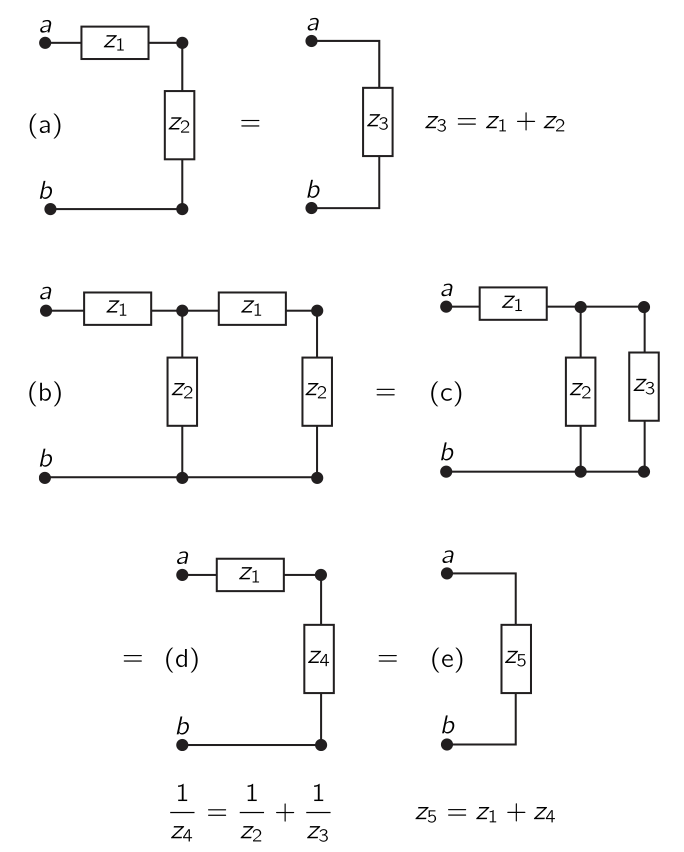
이제 직렬 및 병렬 조합으로 분석할 수 있는 흥미로운 회로에 대해 알아보자. 그림 13.18 (a) 를 보자. 이 경우 \(a\) 단자에서 \(b\) 단자까지의 임피던스가 \(z_1+z_2\) 임을 알 수 있다. 그림 13.18 (b) 는 조금 더 어렵다. 키르히호프 규칙을 사용하는 것보다 직렬 및 병렬 조합을 사용하는 것이 더 쉽다. 오른쪽 끝에 있는 두 임피던스를 단일 임피던스 \(z_3 = z_1 + z_2\) 로 교체할 수 있으며, 이는 (c) 와 같다. 그렇다면 \(z_2\) 와 \(z_3\) 는 그림의 (d) 에 보이는 동등한 병렬 임피던스 \(z_4\) 로 교체할 수 있으며 마지막으로, \(z_1\) 과 \(z_4\) 는 (e) 와 같이 단일 임피던스 \(z_5\) 와 동등하다.
예제 13.6 (무한 사다리의 임피던스-1)
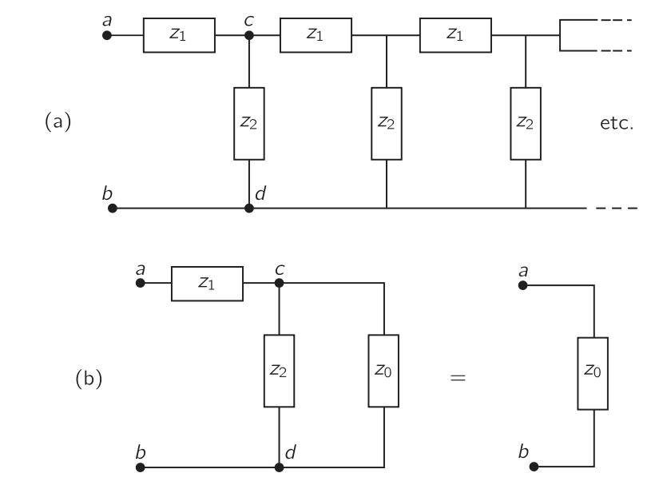
이제 우리는 재미있는 질문을 할 수 있다: 그림 13.18 (b) 의 네트워크에서 우리가 영원히 더 많은 섹션을 계속 추가하여 그림 13.19(a) 의 점선으로 표시된 부분이 무한히 이어지는 무한 네트워크라면? 이건 그렇게 어렵지 않다. 우선 끝에 섹션을 하나 더 추가하더라도 무한 네트워크가 변하지 않는다는 것을 안다. 무한 네트워크의 두 단자 \(a\) 와 \(b\) 사이의 임피던스를 \(z_0\) 라고 하면, 두 단자 \(c\) 와 \(d\) 의 오른쪽에 있는 모든 요소들의 임피던스도 \(z_0\) 가 된다. 따라서 우리는 그림 13.19 (b) 와 같이 네트워크를 표현할 수 있다. \(z_2\) 와 \(z_0\) 의 병렬 조합을 형성하고 그 결과를 \(z_1\)과 직렬로 더하면, 이 회로의 임피던스는 다음과 같다.
\[ z = z_1 + \dfrac{1}{(1/z_2)+(1/z_0)} \quad \text{or}\quad z = z_1 + \dfrac{z_2z_0}{z_2 + z_0}. \]
그런데 이 임피던스는 \(z_0\) 와 같으므로
\[ z_0 = z_1 + \dfrac{z_2 z_0}{z_2+z_0}. \]
비로소 \(z_0\) 를 얻을 수 있다.
\[ z_0 = \dfrac{z_1}{2} + \sqrt{(z_1^2/4)^2 + z_1z_2}. \tag{13.27}\]
우리는 반복되는 직렬 및 병렬 임피던스의 무한 사다리에 대한 임피던스를 구했다. 이 때 임피던스 \(z_0\) 를 이러한 무한 네트워크의 특성 임피던스 (characteristic impedance) 라고 한다.
예제 13.7 (무한 사다리의 임피던스-2)
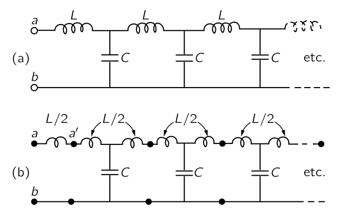
이제 그림 13.20 (a) 에 표시된 바와 같이, 직렬 요소가 인덕턴스 \(L\) 이고 분기된 요소가 정전용량 \(C\) 인 구체적인 예를 살펴보자. 이 경우 우리는 \(z_1 = i\omega L\) 와 \(z_2 = 1/i\omega C\) 로 설정하여 앞서 보았던 무한 네트워크의 임피던스를 구하고자 한다. 식 13.27 의 첫 번째 항 \(z_1/2\) 은 첫 번째 요소의 임피던스의 절반에 해당한다. 따라서 무한 네트워크를 그림 13.20 (b) 와 같이 그리면 더 자연스럽거나 최소한 다소 단순해 보일 것이다. \(a'\) 단자에서 무한 네트워크를 보면 특성 임피던스를 확인할 수 있다.
\[ z_0 = \sqrt{(L/C)−(\omega^2L^2/4)}. \tag{13.28}\]
이제 진동수 \(\omega\) 에 따라 두 가지 흥미로운 경우가 있다. \(\omega^2 < 4/LC\) 이면 임피던스 \(z_0\) 는 실수이며, \(\omega^2 > 4/LC\) 이면 \(z_0\) 는 허수로
\[ z_0=i\sqrt{(\omega^2L^2/4)-(L/C)} \]
이다. 인덕턴스와 정전용량 같은 허수 임피던스만을 포함하는 회로는 허수 임피던스를 갖게 된다. 그렇다면 현재 우리가 연구하고 있는 \(L\) 과 \(C\) 만 있는 회로에 대해 진동수가 \(\sqrt{4/LC}\) 보다 작을 때, 어떻게 순수한 저항일 수 있을까? 높은 주파수에서는 임피던스가 순전히 허수이므로, 이는 앞서 언급한 바와 일치한다. 저주파에서는 임피던스가 순수한 저항이며 따라서 에너지를 흡수합니다. 하지만 회로가 인덕턴스와 정전용량만으로 구성된다면, 저항과 같이 에너지를 지속적으로 흡수할 수 있는 방법은 무엇인가? 답변: 인덕턴스와 커패시턴스가 무한히 존재하기 때문에, 전원이 회로에 연결될 때 첫 번째 인덕턴스와 커패시턴스에 에너지를 공급하고, 그 다음 두 번째 인덕턴스와 세 번째에 에너지를 공급하며, 이것이 계속 이어진다. 이와 같은 회로에서는 에너지가 일정한 속도로 발전기로부터 지속적으로 흡수되어 네트워크로 끊임없이 흐르며, 그 과정에서 인덕턴스와 정전용량에 저장된 에너지를 공급한다.
이 아이디어는 회로에서 일어나고 있는 일에 대해 흥미로운 점을 제시한다. 우리는 소스를 프론트엔드에 연결하면, 그 소스의 효과가 네트워크를 통해 무한한 끝으로 전파될 것으로 예상한다. 직선상에서 파동이 전파되는 것은 구동원으로부터 에너지를 흡수하는 안테나의 복사와 매우 유사하다; 즉, 임피던스가 실수일 때, 즉 \(\omega < \sqrt{4/LC}\) 일 때 이러한 전파가 발생할 것으로 기대합니다. 하지만 임피던스가 순허수일 때, 즉 \(\omega > \sqrt{4/LC}\) 인 경우, 우리는 그러한 전파를 기대하지 않을 것이다.
\(\mathrm{II}\).22-7 필터
우리는 마지막 절에서 그림 13.20 의 무한 사다리 네트워크가 특정 임계 진동수 \(\sqrt{4/LC}\) 이하의 진동수로 구동될 경우 지속적으로 에너지를 흡수한다는 것을 확인했다. 앞으로 이를 차단 진동수 (cutoff frequency) \(\omega_0\) 라고 부를 것이다. 우리는 이 효과를 지속적인 에너지 전달이라는 관점에서 이해될 수 있다고 제안했다. 반면에, \(\omega > \omega_0\) 인 고주파에서는 에너지의 연속적인 흡수가 존재하지 않으며, 따라서 전류가 매우 멀리 “penetrate”되지 않을 수도 있다고 예상할 수 있다. 이 아이디어들이 옳은지 확인해 보자.
사다리의 앞부분을 어떤 교류 발전기에 연결했다고 가정하고, 사다리의 754번째 구간에서 전압이 어떻게 보이는지 물어보는다고 가정해 보자. 네트워크가 무한하기 때문에, 한 구간에서 다음 구간으로 전압이 변하는 일은 항상 동일합니다; 따라서 어떤 구간, 예를 들어 \(n\) 번째 구간에서 다음 구간으로 갈 때 어떤 일이 일어나는지 살펴보겠습니다. 우리는 그림 13.21 (a) 에 표시된 대로 전류 \(I_n\) 과 전압 \(V_n\) 을 정의한다.
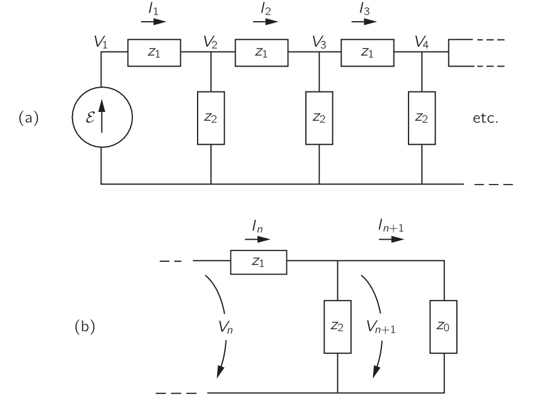
\(V_n\) 으로부터 전압 \(V_{n+1}\) 을 얻을 수 있으며, \(n\) 번째 구간 이후의 나머지 부분을 특성 임피던스 \(z_0\) 로 교체할 수 있다는 점을 기억하라. 그러면 그림 13.21 (b) 의 회로만 분석하면 된다. 우선 \(z_0\) 를 가로지르는 모든 \(V_n\) 은 \(I_n z_0\) 와 같아야 한다 또한, \(V_n\) 과 \(V_{n+1}\) 의 차이는 단지 \(I_n z_1\) 이다.
\[ V_n − V_{n+1} = I_n z_1 = V_n\dfrac{z_1}{z_0}. \]
이로부터
\[ \dfrac{V_{n+1}}{V_n} = 1−\dfrac{z_1}{z_0}=\dfrac{z_0−z_1}{z_0}. \]
이 비율을 사다리의 한 구간에 대한 전파 계수라고 하며, \(\alpha\) 라고 표기하자. 이 관계는 모든 섹션에서 동일하다.
\[ \alpha := \dfrac{z_0−z_1}{z_0}. \tag{13.29}\]
이 때 \(n\) 번째 구간 이후의 전압은
\[ V_n = \alpha^n\mathcal{E}. \tag{13.30}\]
이제 754 구간 이후에 전압은 \(\alpha^{754}\mathcal{E}\) 임을 안다.
그림 13.20 (a) 의 \(L‐C\) 사다리에서 \(α\) 가 어떻게 보이는지 생각해보자. 식 13.27 에서 \(z_0\) 를 사용한다. 그리고 \(z_1=i\omega L\) 이다. 이로부터
\[ \alpha = \dfrac{\sqrt{(L/C)−(\omega^2L^2/4)} - i (\omega L/2)}{\sqrt{(L/C)−(\omega^2L^2/4)} + i (\omega L/2)} \tag{13.31}\]
구동 진동수가 차단진동수 \(\omega_0=\sqrt{4/LC}\) 이하인 경우, \(|\alpha|=1\) 이므로
\[ \alpha = e^{i\delta}, \]
로 쓸 수 있다. 즉, 전압의 크기는 모든 구간에서 동일하고 위상만 변화한다. 위상 변화 \(\delta\) 는 실제로 음수이며, 전압이 네트워크를 따라 전달되는 동안의 지연(delay) 을 나타낸다.
\(\omega > \omega_0\) 에 대해서는 식 13.31 의 분자와 분모에서 \(i\) 를 제거하면
\[ \alpha = \dfrac{\sqrt{(\omega^2L^2/4)-(L/C)} - (\omega L/2)}{\sqrt{(\omega^2L^2/4)- (L/C)} + (\omega L/2)}. \tag{13.32}\]
전파 계수 \(\alpha\) 이며, \(\alpha<1\) 이다. 즉, 어느 구간의 전압은 항상 이전 구간의 전압보다 \(\alpha\) 배 낮다. \(\omega_0\) 보다 높은 모든 진동수에 대해, 네트워크를 따라 이동함에 따라 전압이 빠르게 소모된다. \(\alpha\) 의 절대값을 \(\omega\) 함수로 보면 그림 13.22 와 같다.
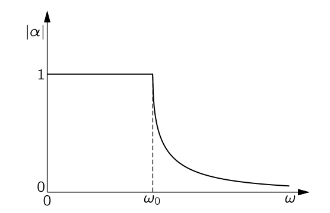
이 네트워크에서 저주파는 “통과”하고 고주파는 “거부” 하거나 “필터링된다”고 말한다. 진동수에 따라 정해진 방식으로 특성이 변하도록 설계된 모든 네트워크를 필터 (filter) 라고 한다. 낮은 진동수가 통과하므로 low-pass filter 라고 한다.
당연히 실제로 일어날 수 없는 무한 네트워크에 대한 논의가 왜 이렇게 많은지 궁금하실 수도 있다. 핵심은 유한 네트워크에서 동일한 특성이 특성 임피던스 \(z_0\) 와 같은 임피던스로 마무리하면, 유한 네트워크에서도 발견된다는 점이다. 현재 실제로는 \(R\), \(L\), \(C\) 와 같은 몇 가지 간단한 요소만으로 특성 임피던스를 정확히 재현하는 것이 불가능하다. 하지만 특정 주파수 범위에 대해 공정한 근사값을 적용하면 종종 그렇게 할 수 있다. 이와 같이 하면 무한 네트워크의 경우와 거의 동일한 특성을 가진 유한 필터 네트워크를 만들 수 있다. 예를 들어, \(L‐C\) 사다리는 순수 저항 \(R=\sqrt{L/C}\) 에서 종료될 경우, 우리가 설명한 대로 거의 동일하게 동작한다.
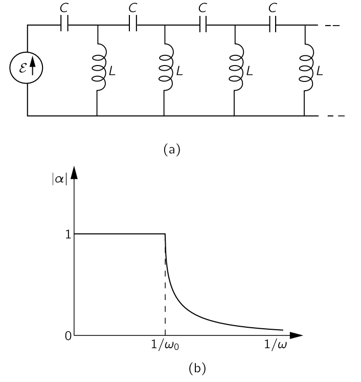
우리의 \(L‐C\) 사다리에서 \(L\) 과 \(C\) 의 위치를 교환하여 그림 13.23 (a) 에 표시된 사다리를 만들면, 고주파를 전파하고 저주파를 차단하는 필터가 된다. 식 13.10 을 보면 식 13.32 에서 \((L,\,C,\,\omega)\) 를 \((C,\, L,\,1/\omega)\) 로 바꾸면 된다. 이는 그림 13.23 (b) 에서 보이는 것고 ㅏ같다.
이러한 low-pass 및 high-pass 필터는 다양하게 이용된다. \(L-C\) low-pass 필터는 직류 전원 공급 장치에서 종종 “smoothing” 필터로 사용된다. 교류 전원으로부터 직류 전력을 만들려면 전류가 한 방향으로만 흐르도록 허용하는 정류기부터 시작한다. 정류기에서 그림 13.24 에 표시된 함수 \(V(t)\) 와 같은 일련의 펄스를 얻을 수 있는데, 이는 위아래로 흔들리기 때문에 형편없는 직류이다. 정류기와 부하 사이에 low-pass 필터를 삽입함으로써 직류에 근접한 전류를 얻을 수 있다.
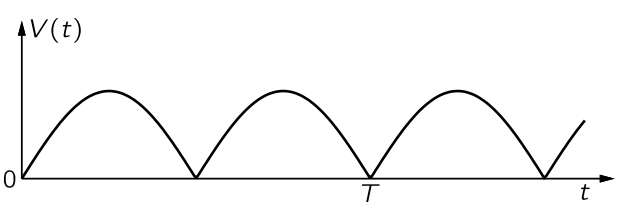
그림 13.24 의 시간에 대한 함수는 일정한 전압과 사인파, 그리고 더 큰 진동수들의 사인파들을 겹쳐서 푸리에 급수로 의해 표현될 수 있다는 것을 안다. 우리의 필터가 선형이라면(우리가 가정해 온 바와 같이 \(L\) 과 \(C\) 가 전류나 전압에 따라 변하지 않는 경우) 필터에서 나오는 것은 입력에서 각 부품의 출력이 겹쳐진다. 우리 필터의 절단 진동수 \(\omega_0\) 가 함수 \(V(t)\) 에서 가장 낮은 진동수보다 조금 낮게 배치하면, \(\omega=0\) 인 직류 잘 흐르지만 첫 번째 고조파의 진폭이 크게 감소합니다. 그리고 더 큰 진동수파의 진폭은 더 크게 감소한다. 따라서 우리는 필터를 추가하기만 하면 원하는 만큼 부드러운 출력을 얻을 수 있다.
특정 저주파를 차단하고자 할 경우 high-pass 필터를 사용한다. 예를 들어, 축음기 앰프에서는 high-pass 필터를 사용하여 음악을 통과시키는 동시에 턴테이블 모터에서 발생하는 저음의 울림을 차단할 수 있다.
또한 대역통과 필터(band-pass filter) 를 만들어 특정 진동수 간격 \((\omega_1,\,\omega_2)\) 만 주로 통과하도록 하는 것이 가능하다. 이는 high-pass 필터와 low-pass 필터를 결합하면 되지만 일반적으로는 임피던스 \(z_1\) 과 \(z_2\) 가 더 복잡한 사다리를 만들어 각각 \(L\) 과 \(C\) 의 조합이 되도록 한다. 이러한 대역 통과 필터는 그림 13.25 (a) 에 표현된 것과 같은 전파 상수를 가질 수 있다. 예를 들어, 고주파 전화 케이블의 여러 음성 채널 각각이나 라디오 전송의 변조 반송선과 같이 주파수 간격만을 차지하는 신호를 분리하는 데 사용될 수 있다.
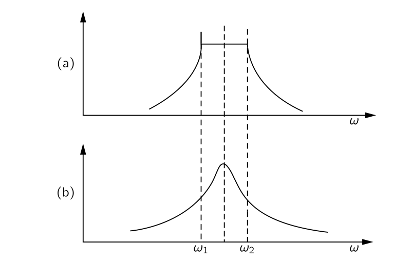
이러한 필터링은 일반 공명 곡선의 선택성을 이용하여 수행할 수도 있다(그림 13.25 (b)) 하지만 공진 필터는 일부 용도에서는 대역통과 필터만큼 좋지는 않다. \(\mathrm{I}\).48 비트 을 기억하자. I) 진동수 \(\omega_c\) 의 반송파가 “신호” 주파수 \(\omega_s\) 로 변조될 때, 전체 신호는 반송파 주파수뿐만 아니라 두 개의 측대역 주파수 \(\omega_c+\omega_s\) 와 \(\omega_c−\omega_s\) 도 포함한다. 공진 필터를 사용할 경우, 이러한 측대역은 항상 약간 감쇠되며, 감쇠가 클수록 신호 주파수가 높아진다. 이는 그림에서 확인할 수 있다. 그래서 진동수 응답이 좋지 않다. 높은 음악 톤은 전달되지 않는다. 하지만 필터링이 폭 \(\omega_2−\omega_1\) 의 폭이 가장 높은 신호 주파수의 두배보다 크게 설계된 밴드패스 필터로 수행된다면, 원하는 신호에 대한 주파수 응답은 평평하게 된다.
사다리 필터에 대해 한 가지를 더 알아보자. 그림 13.20 의 \(L‐C\) 사다리는 또한 전송선의 대략적인 표현이다. 다른 도체와 평행하게 연결되는 긴 도체가 있다면—예를 들어 동축 케이블의 전선이나 지면 위에 매달린 전선과 같이—두 도체 사이에는 어느 정도 정전용량이 존재하고, 또한 그 사이의 자기장에 의한 인덕턴스도 발생한다. 만약 그 선을 \(\Delta l\) 의 작은 길이로 나눈다면, 각 길이는 연속 인덕턴스 \(\Delta L\) 와 단락 정전용량 \(\Delta C\) 를 갖는 \(L‐C\) 사다리의 한 구간처럼 보일 것이다. 그럼 우리는 앞서의 결과를 사다리 필터에 사용할 수 있다. \(\Delta l \to 0\) 극한을 취하면, 우리는 전송선에 대한 좋은 설명을 얻게 된다. \(\Delta l\) 이 점점 작아짐에 따라 \(\Delta L\) 과 \(\Delta C\) 가 동일한 비율로 감소하므로 \(\Delta L/\Delta C\) 비율이 일정하게 유지된다는 점에 유의하라. 따라서 식 13.28 의 극한을 취하면 \(\Delta L\) 과 \(\Delta C\) 가 0이 될 때, 우리는 특성 임피던스 \(z_0 =\sqrt{\Delta L/\Delta C}\) 인 순수 저항임을 발견한다. 우리는 또한 비율 \(\Delta L/\Delta C\) 를 \(L_0/C_0\) 로 표기할 수 있으며, 여기서 \(L_0\) 와 \(C_0\) 는 선의 단위 길이에 대한 인덕턴스와 정전용량입니다. 그러면
\[ z_0 = \sqrt{\dfrac{L_0}{C_0}}. \tag{13.33}\]
또한 \(\Delta L\) 과 \(\Delta C\) 가 \(0\) 이 되면, 차단 주파수 \(\omega_0=\sqrt{4/LC}\) 가 무한대로 이동한다. 이상적인 전송 회선에는 차단 주파수가 없다.
\(\mathrm{II}\).22–8 이외의 회로 소자
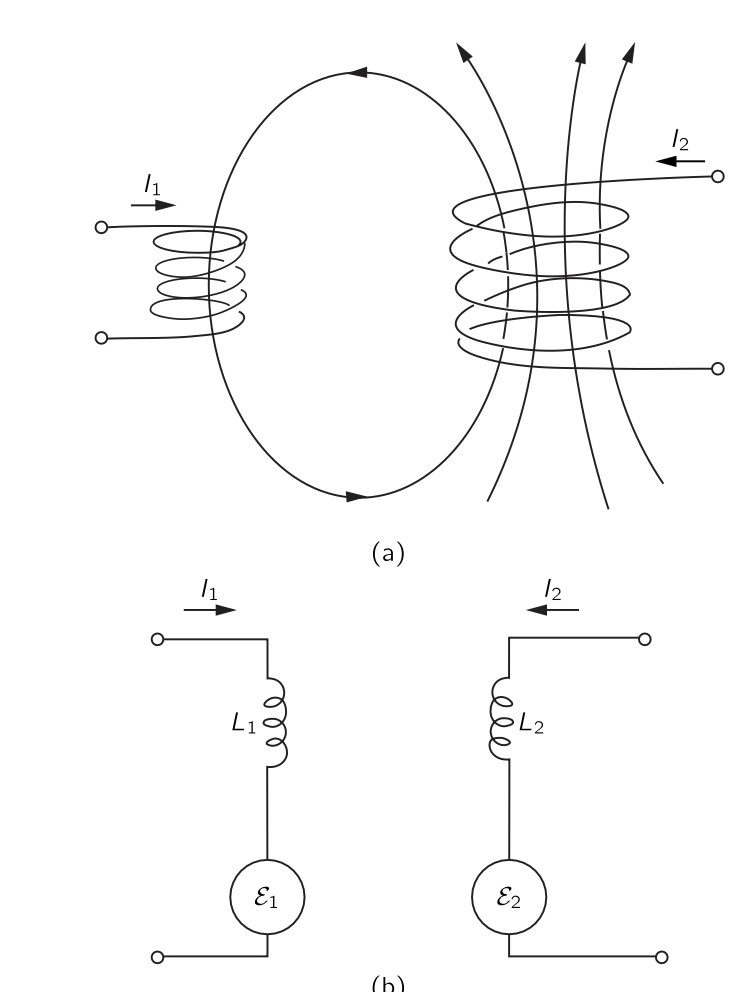
우리는 지금까지 이상적인 회로 임피던스—인덕턴스, 정전용량, 저항—와 이상적인 발전기만을 정의했다. 이제 상호 인덕턴스, 트랜지스터, 진공관과 같은 다른 소자들을 동일한 기본 요소만을 사용하여 설명할 수 있음을 보여주고자 한다. 두 개의 코일이 있다고 가정하고, 의도적으로든 아니든 그림 13.26 (a) 와 같이 하나의 코일에서 나오는 플럭스가 다른 코일과 연결된다고 하자. 그러면 두 코일은 상호 인덕턴스 \(M\) 을 가지며 하나의 코일에서 전류가 변할 때 다른 코일에서는 전압이 생성된다. 두 개의 상호 작용하는 코일 각각에서의 유도된 기전력은 두 부분의 합으로 표현될 수 있다.
\[ \begin{aligned} \mathcal{E}_1 &= -L_1 \dfrac{dI_1}{dt} \pm M \dfrac{dI_2}{dt}, \\[0.3em] \mathcal{E}_2 &= -L_1 \dfrac{dI_2}{dt} \pm M \dfrac{dI_1}{dt} \end{aligned} \tag{13.34}\]
각각의 식은 자체 인덕턴스 항과 상호 인덕턴스 항의 합이다. 각각의 두 번째 항의 부호는 한 코일의 플럭스가 다른 코일과 연결하는 방향에 따라 결정된다. 이상적인 인덕턴스를 설명할 때 사용한 동일한 근사를 적용하면, 각 코일의 단자에 걸친 전위차는 코일 내의 기전력과 같다고 말할 수 있다. 여기서 그림 13.26 (b) 가 그림 13.26 (a) 에 대한 등가회로가 되기 위해 무엇이 필요할까? 그림 13.26 (b) 의 기전력이 아래의 관계를 따른다고 하자. 그림 13.26 (b) 에서의 \(\mathcal{E}_1,\, \mathcal{E}_2\) 는 상호인덕턴스에 의한 것이다.
\[ \mathcal{E}_1 = \pm i\omega M I_2,\qquad \mathcal{E}_2 = \pm i\omega M I_1. \tag{13.35}\]
즉, 자체 인덕턴스의 효과는 일반적인 인덕턴스를 다루는 방법대로 하며, 상호 인덕턴스의 효과를 추가적인 이상 전압 발생기로 대체하는 것이다. 물론, 우리는 또한 회로의 다른 부분에 있는 전류와 이 기전력을 연결하는 방정식을 추가로 구해야 한다. 그러나 이 방정식이 선형인 한, 우리는 방금 회로 방정식에 선형 방정식을 추가했으며, 등가 회로에 관한 이전의 모든 결론은 여전히 옳다.
상호 인덕턴스 외에도 상호 정전용량이 있을 수 있다. 지금까지 콘덴서에 대해 이야기할 때 우리는 항상 전극이 두 개뿐이라고 상상해 왔지만, 많은 경우, 예를 들어 진공관에서는 여러 전극이 서로 가깝게 배치될 수 있다. 전극 중 하나에 전하를 가하면, 그 전기장은 다른 전극들 각각에 전하를 유도하고 그 전위에 영향을 미친다. 예를 들어, 그림 13.27 (a) 에 표시된 네 개의 판 배열을 생각해보자. 이 네 개의 플레이트가 \(A\), \(B\), \(C\), \(D\) 전선을를 통해 외부 회로에 연결되어 있다고 가정해 보자. 정전기 효과에만 신경 쓰는 한, 그러한 전극 배열의 등가 회로는 그림의 (b) 부분에 표시된 바와 같다. 어떤 전극과 다른 전극들 사이의 전기적 상호작용은 두 전극 사이의 용량과 동일하다.
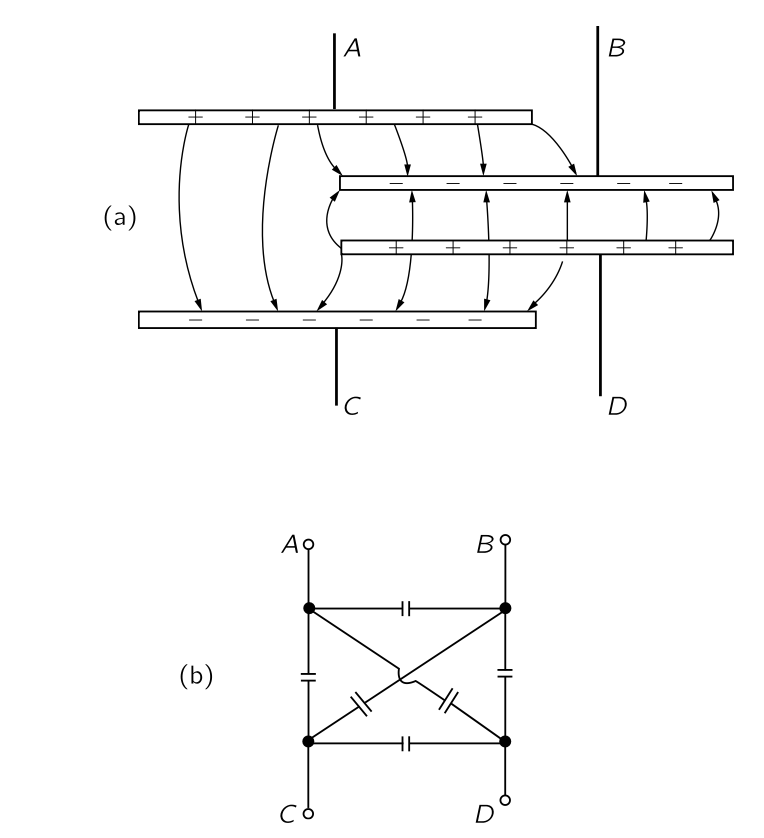
마지막으로, 교류회로에서 트랜지스터와 라디오 튜브와 같은 복잡한 장치를 어떻게 표현해야 할지 고려해 보자. 주의할 것은 이러한 장치들이 종종 전류와 전압 사이의 관계가 전혀 선형적이지 않은 방식으로 작동한다는 것이다. 이러한 경우 방정식의 선형성에 의존하는 우리가 만든 진술들은 더 이상 정확하지 않다. 반면에, 많은 응용 분야에서 동작 특성이 충분히 선형적이기 때문에 트랜지스터와 튜브를 선형 장치로 간주할 수 있다. 즉, 진공관의 플레이트에 있는 교류 전류가 다른 전극에 나타나는 전압, 즉 그리드 전압과 플레이트 전압에 선형적으로 비례한다는 의미이다. 그러한 선형 관계가 있을 경우, 우리는 해당 장치를 등가회로 표현에 통합할 수 있다.
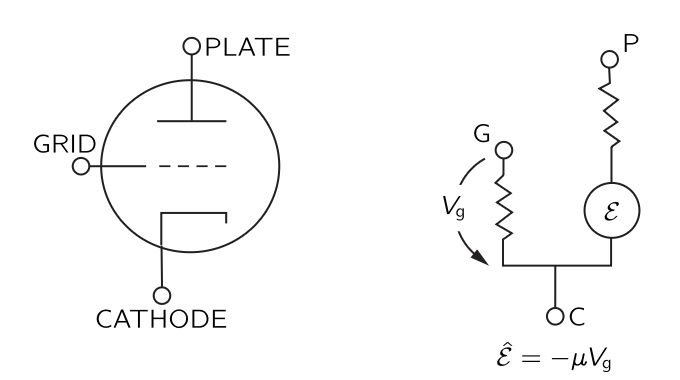
상호 인덕턴스의 경우와 마찬가지로, 우리 표현은 장치의 한 부분에 있는 전압 또는 전류가 다른 부분의 전류 또는 전압에 미치는 영향을 설명하는 보조 전압 발생기를 포함해야 한다. 예를 들어, 삼극진공관 플레이트 회로는 일반적으로 전원 강도가 그리드 전압에 비례하는 이상적인 전압 발생기와 직렬로 연결된 저항으로 표현될 수 있다. 그림 13.28 은 등가회로를 보여준다. 마찬가지로, 트랜지스터의 컬렉터 회로는 이상적인 전압 발생기와 직렬로 연결된 저항기로 편리하게 표현되며, 그 전압 발생기의 전원 강도는 방출기에서 트랜지스터 베이스까지의 전류에 비례한다. 그때 등가 회로는 그림 13.29 와 같다. 작동을 설명하는 방정식이 선형인 한, 우리는 이러한 표현을 튜브나 트랜지스터에 사용할 수 있다. 그렇다면, 그것들이 복잡한 네트워크에 통합될 때, 임의의 소자 연결에 대한 등가 표현에 대한 우리의 일반적인 결론은 여전히 유효하다.
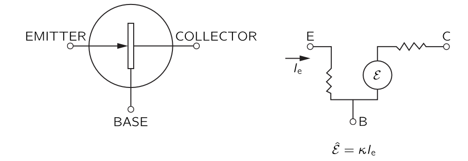
트랜지스터와 라디오 튜브 회로에 대해 눈에 띄는 점은 임피던스만을 포함하는 회로와 다르게 유효 임피던스 \(z_\text{eff}\) 의 실수 부분이 음수가 될 수 있다는 것이다. 우리는 \(z\) 의 실수 부분이 에너지 손실을 나타낸다는 것을 안다. 하지만 트랜지스터와 튜브가 회로에 에너지를 공급한다는 것이 중요한 특성이다. (물론 그들은 단순히 에너지를 “제조”하는 것이 아니라 전원 공급 장치의 직류 회로에서 에너지를 받아 교류에너지로 변환한다.) 따라서 음의 저항을 가진 회로를 가질 수 있다. 이러한 회로는 임피던스와 양의 실수부, 즉 양의 저항을 가진 임피던스에 연결하고, 두 실수 부분의 합이 정확히 \(0\) 이 되도록 배열하면 결합된 회로에서 소산이 존재하지 않는 특성을 가진다. 에너지 손실이 없으면, 일단 시작된 모든 교류 전압은 영원히 남게 된다. 이는 원하는 주파수에서 교류 전압원으로 사용할 수 있는 발진기 또는 신호 발생기의 작동에 대한 기본 개념이다.
\(\textrm{II}\).23 공동 공진
\(\mathrm{II}\).23–1 실제 소자
어떤 단자 쌍에서 바라볼 때, 이상적인 임피던스들과 발전기로 구성된 임의의 회로는 주어진 주파수에서 임피던스 \(z\) 와 직렬로 연결된 발전기 \(\mathcal{E}\) 와 동등하다. 그것은 단자에 전압 \(V\) 를 가하고 전류 \(I\) 를 찾기 위해 모든 방정식을 풀면 전류와 전압 사이의 선형 관계를 얻어야 하기 때문이다. 모든 방정식이 선형이므로 \(I\) 에 대한 결과는 \(V\) 에만 선형적으로 의존해야 합니다. 가장 일반적인 선형 형태는 다음과 같이 표현될 수 있다.
\[ I = \dfrac{1}{z}(V−\mathcal{E}). \tag{13.36}\]
일반적으로 \(z\) 와 \(\mathcal{E}\) 는 모두 복잡한 방식으로 진동수 \(\omega\) 에 의존할 수 있다. 그러나 식 13.36 은 두 개의 단자 뒤에 임피던스 \(z(\omega)\) 와 직렬로 있는 발전기 \(\mathcal{E}(\omega)\) 만 있을 경우 얻을 수 있는 관계이다.
반대 유형의 질문도 있다: 만약 두 개의 단자를 가진 전자기 장치를 가지고 \(I\) 와 \(V\) 사이의 관계를 측정하여 \(E\) 와 \(z\) 를 진동수의 함수로 결정한다면, 내부 임피던스 \(z\) 와 동등한 이상적인 소자들의 조합을 찾을 수 있을까? 답은 합리적인—즉, 물리적으로 의미 있는—함수 \(z(\omega)\) 에 대해, 유한한 이상 소자 집합을 포함하는 회로를 사용하여 상황을 원하는 만큼 높은 정확도로 근사할 수 있다는 것이다. 우리는 지금 일반적인 문제를 고려하고 싶지 않으며, 몇 가지 경우에 대해 물리적 논증에서 기대할 수 있는 것만 살펴보겠다.
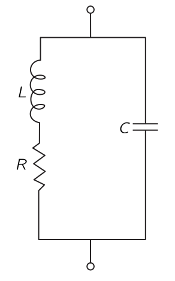
실제 저항에서는 저항을 통과하는 전류가 자기장을 생성한다. 따라서 실제 저항은 인덕턴스를 가져야 한다. 또한, 저항기에 전위차가 있을 경우, 필요한 전기장을 생성하기 위해 저항기의 양쪽 끝에 전하가 있어야 한다. 전압이 변함에 따라 전하가 비례에 따라 변하므로 저항기에도 어느 정도 정전용량이 있게 된다. 우리는 실제 저항이 그림 13.30 에 표현된 등가회로를 가진다고 예상한다. 잘 설계된 저항에서는 이른바 “기생” 소자 \(L\) 과 \(C\) 가 작아, 의도된 주파수에서 \(\omega L\) 은 \(R\) 보다 훨씬 작고, \(1/ωC\) 는 \(R\) 보다 훨씬 크다. 따라서 그들을 무시할 수 있을지도 모른다. 하지만 진동수가 높아짐에 따라 결국 중요해지며, 저항기가 공진 회로처럼 보이게 된다.
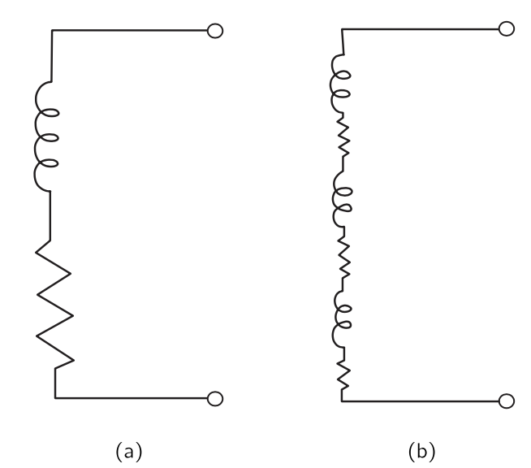
실제 인덕턴스는 역시 임피던스가 \(i\omega L\) 인 이상화된 인덕턴스와 같지 않다. 실제 와이어 코일은 약간의 저항을 가지고 있으므로, 저진동수에서는 코일이 실제로 저항이 있는 직렬 인덕턴스와 동일하다(그림 13.31 (a)).
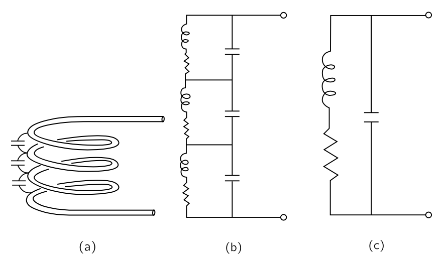
실제 코일에 대해 주파수를 올리면, 인덕턴스와 저항의 근사값이 더 이상 그리 좋지 않다. 전압을 만들기 위해 전선에 축적되어야 하는 전하가 중요해질 것이다. 그림 13.32 (a) 에 스케치된 바와 같이 코일의 회전마다 작은 축전지가 있는 것과 같다. 우리는 그림 13.32 (b) 의 회로를 통해 실제 코일을 근사해 볼 수 있다. 저주파에서는 이 회로를 그림의 (c) 부분에 있는 더 간단한 회로로 꽤 잘 모방할 수 있다(이는 다시 한 번 고주파 저항 모델에서 발견한 동일한 공진 회로입니다). 그러나 높은 주파수의 경우, 그림 13.32 (b) 의 보다 복잡한 회로가 더 좋다. 실제로, 실제 물리적 인덕턴스의 임피던스를 보다 정확하게 표현하고자 할수록, 인공 모델에서 사용해야 할 이상적인 소자들이 더욱 많아진다.
실제 코일에서 무슨 일이 일어나는지 조금 더 자세히 살펴보자. 인덕턴스의 임피던스는 \(\omega L\) 에 비례하며, 따라서 저주파에서는 \(0\) 이 됩니다—이는 “단락 회로”이며, 우리가 보는 것은 와이어의 저항뿐이다. 주파수가 상승함에 따라 \(\omega L\) 은 곧 \(R\) 보다 훨씬 커지며, 코일은 거의 이상적인 인덕턴스와 비슷하게 보인다. 하지만 우리가 더 높은 진동수로으로 갈수록, 정전용량이 중요해진다. 그들의 임피던스는 \(1/\omega C\) 에 비례하며, 이는 \(\omega\) 가 작을 때 크다. 주파수가 충분히 작을 경우, 콘덴서는 “열린 회로”이며, 다른 장치와 병렬로 연결될 경우 전류가 흐르지 않는다. 하지만 고주파에서는 전류가 인덕턴스를 통과하기보다 회전 사이의 정전용량으로 흐르는 것을 선호한다. 따라서 코일의 전류는 한 회전에서 다른 회전으로 튀어오르며, 기전력을 튈 필요가 있는 곳을 계속 돌지 않는다. 따라서 전류가 루프를 순환하도록 의도했을지라도, 그것은 가장 쉬운 경로, 즉 가장 임피던스가 적은 경로를 택하게 된다.
만약 이 주제가 인기있었다면, 이 효과는 “고주파 장벽” 혹은 유사한 이름으로 불렸을 것이다. 모든 주제에서 같은 일이 일어난다. 공기역학에서, 낮은 속도를 위해 설계된 음속보다 더 빠르게 움직이려고 하면, 그것은 효과가 없다. 그것이 그곳에 큰 “장벽”이 있다는 뜻은 아니며, 단지 그 객체를 재설계해야 함을 의미한다. 따라서 우리가 “인덕턴스”로 설계한 이 코일은 좋은 인덕턴스로 작동하지 않을 것이며, 매우 높은 주파수에서 다른 종류의 것으로 작용할 것이다. 고주파에 대해서는 새로운 설계를 찾아야 한다.
\(\mathrm{II}\).23–2 고주파에서의 축전지
이제 진동수가 점점 커짐에 따라 기하학적으로 이상적인 축전지의 거동을 자세히 알아보고, 이를 통해 그 특성의 전이를 확인할 수 있다. (인덕턴스 보다는 커패시터가 선호된다. 왜냐하면 플레이트 한 쌍의 기하학이 코일의 기하학보다 훨씬 덜 복잡하기 때문이다.) 그림 13.33 의 커패시터를 보자. 만약 커패시터에 직류를 충전하면, 한 판에는 양전하가, 다른 판에는 음전하가 존재하게 되며, 판들 사이에 전기장이 균일하게 존재한다.
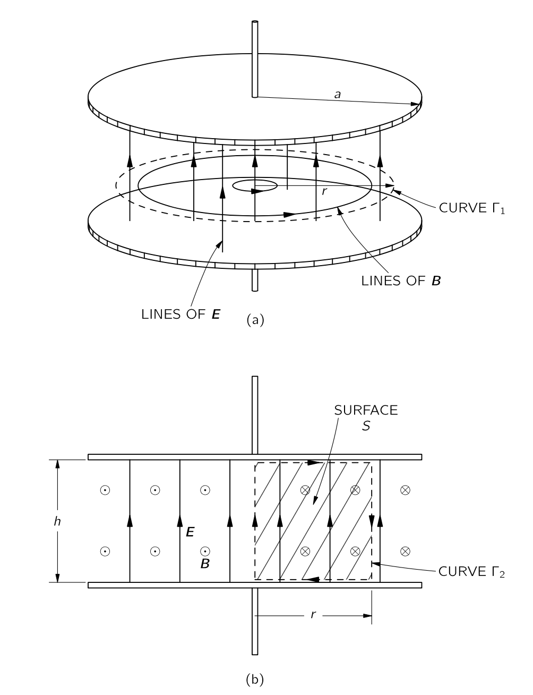
직류 대신 저주파수의 교류를 플레이트에 가한다고 하자. (우리는 나중에 주파수의 높고 낮음을 구별하는 기준을 알게 된다.) 예를 들자면 커패시터를 저주파 발전기에 연결한다. 전압이 교대로 변함에 따라, 상판의 양전하가 제거되고 음전하가 쌓인다. 그 일이 일어나는 동안 전기장은 사라졌다가 반대 방향으로 형성된다. 전하가 천천히 앞뒤로 출렁이면 전기장이 따른다. 각 순간마다 전기장은 무시할만한 일부 에지 효과를 제외하고는 그림 13.33 (b) 에 표시된 바와 같이 균일하다. 전기장의 크기를 다음과 같이 쓸 수 있다.
\[ \boldsymbol{E}=E_0e^{i \omega t}\boldsymbol{e}_z. \tag{13.37}\]
여기서 \(E_0\) 는 상수이다.
이제 진동수가 계속 증가하더라도 그것이 계속 옳을까? 그렇지 않다. 전기장의 변화에 따라 그림 13.33 (a) 의 \(\Gamma_1\) 과 같은 모든 루프에 대해 시간에 따라 변화하는 전기장의 플럭스가 존재하며, 따라서 자기장이 생긴다.
\[ c^2\oint_\Gamma \boldsymbol{B\cdot}\,d\boldsymbol{l} =\dfrac{d}{dt}\int_{\text{inside }\Gamma} \boldsymbol{E\cdot}\,d\boldsymbol{a}. \tag{13.38}\]
\(\Gamma_1\) 루프에 대해 계산하면,
\[ c^2B\cdot 2\pi r= \dfrac{\partial}{\partial t}E\cdot \pi r^2. \tag{13.39}\]
시간에 대한 \(E\) 의 미분은 우리 교대장에서 단순히 \(i\omega E_0e^{i\omega t}\) 이다. 이로부터 커패시터에 생기는 자기장은
\[ \boldsymbol{B}=\dfrac{i\omega r}{2c^2}E_0e^{i\omega t}\boldsymbol{e}_\theta. \tag{13.40}\]
즉, 자기장 역시 진동하며, 그 강도는 \(r\) 에 비례한다.
그런데 변동하는 자기장이 있을 경우, 이로부터 유도된 전기장이 발생하여 커패시터가 약간 인덕턴스와 같은 역할을 하게 된다. 진동수가 상승함에 따라 자기장은 강해지며, 이는 \(E\) 의 변화율에 비례하고, 따라서 \(\omega\) 에 비례한다. 커패시터의 임피던스는 더 이상 단순히 \(1/i\omega C\) 가 아니다.
진동수를 계속 올린다고 하자. 진동하는 자기장이 생기며 따라서 전기장은 우리가 가정한 대로 균일할 수 없다! 변화하는 자기장이 있을 경우, 패러데이의 법칙에 따라 전기장의 선적분이 반드시 존재한다. 따라서 고주파에서 발생하기 시작하는 감지할만한 자기장이 존재한다면, 중심으로부터 모든 거리에서 전기장이 동일할 수 없다. 전기장은 \(r\) 에 따라 변해야 전기장의 선적분이 자기장의 변화하는 플럭스와 일치할 수 있다.
정확한 전기장을 구할 수 있는지 확인해 보자. 우리는 저주파에 대해 처음 가정한 균일 필드에 “보정”을 추가하여 정확한 전기장을 구할 수 있다. 균일한 전기장을 \(\boldsymbol{E}_1\) 이라고 하면 \(\boldsymbol{E}_1= E_0e^{i\omega t}\hat{\boldsymbol{z}}\) 이고 보정항을 \(\boldsymbol{E}_2\) 라고 하면, 정확한 전기장
\[ \boldsymbol{E} = \boldsymbol{E}_1 + \boldsymbol{E}_2. \]
임의의 \(\omega\) 에 대해서는 콘덴서의 중심에 있는 필드를 \(E_0e^{i\omega t}\boldsymbol{e}_z\) 라고 하면 \(E_2(r=0)=0\) 이 된다. \(E_2\) 를 찾기 위해 우리는 페러데이 법칙의 적분 형태를 이용한다.
\[ \oint_Γ \boldsymbol{E\cdot} \,d\boldsymbol{l} = −\dfrac{d}{dt}(\boldsymbol{B} \text{ 의 플럭스}). \]
그림 13.33 (b) 에 표시된 경로 \(\Gamma_2\) 에 대해 적분은 단순하다. 이 경로에 대한 \(E_1\) 의 선적분은 \(0\) 이므로 \(E_2\) 만 기여하고 그 적분값은 \(−E_2(r)\cdot h\) 이다. 여기서 \(h\) 는 판 사이의 간격이다. 또한 \(E\) 가 위쪽을 향할 때 양수라고 하자. 이는 그림 13.33 (b) 에서 \(\Gamma_2\) 내부의 음영 영역 \(S\) 에 대한 \(B\) 의 적분의 시간에 대한 변화율에 마이너스를 곱한 값과 같다. 폭이 \(dr\) 인 수직 스트립을 통과하는 플럭스는 \(B(r)h\,dr\) 이며, 따라서 전체 플럭스는
\[ \Phi_M = h\int B(r)\,dr. \]
이를 통해 아래 식을 얻는다.
\[ E_2(r) = \dfrac{\partial }{\partial t}\int B(r)\,dr . \tag{13.41}\]
전기장이나 자기장은 판의 간격에 의존하지 않는다.
\(B(r)\) 에 대해 식 13.40 를 이용하면
\[ \boldsymbol{E}_2(r) = - \dfrac{\omega^2 r^2}{4c^2}E_0e^{i\omega t}\boldsymbol{e}_z. \tag{13.42}\]
예상대로, 유도된 전기장은 전기장을 더 멀리 감소시키는 경향이 있다. 수정된 전기장 \(E=E_1+E_2\) 는
\[ \boldsymbol{E}=\boldsymbol{E}_1 + \boldsymbol{E}_2 = \left(1−\dfrac{1}{4}\dfrac{\omega^2 r^2}{c^2}\right)E_0e^{i\omega t} \boldsymbol{e}_z. \tag{13.43}\]
축전지의 전기장은 더 이상 균일하지 않으며, 그림 13.34 의 파선으로 표시된 포물선 형태를 가진다. 단순한 커패시터가 약간 복잡해지고 있음을 알 수 있다.
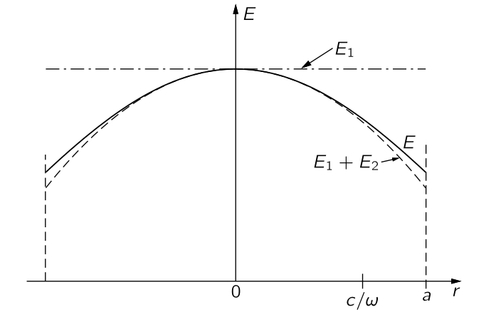
우리는 이제 우리의 결과를 사용하여 고주파에서 커패시터의 임피던스를 계산할 수 있다. 전기장을 알면 판의 전하를 계산하고 커패시터를 통한 전류가 \(\omega\) 에 어떻게 의존하는지 알 수 있지만, 현재로서는 그 문제에 관심이 없다. 우리는 진동수가 계속 상승함에 따라 어떤 일이 일어나는지 보는 데 더 관심이 있다. 하지만 필요한 계산은 모두 끝나지 않았나? 아니!! 전기장을 보정했기 때문에 계산한 자기장이 더 이상 맞지 않게 되었다. 식 13.40 의 자기장은 대략 옳지만, 이는 첫 번째 근사에 불과하다. 이제 이를 \(B_1\) 이라고 하자.
\[ B_1=\dfrac{iωr}{2c^2}E_0e^{i\omega t}. \tag{13.44}\]
\(B_1\) 는 \(E_1\) 의 변화에 의해 생성된다. 이제 올바른 자기장은 전체 전기장 \(E_1+E_2\) 에 의해 생성된 것이다. 자기장을 \(B=B_1+B_2\) 로 표현하면, 두 번째 항은 \(E_2\) 에 의해 생성된 추가 필드일 뿐이다. \(B_2\) 를 찾기 위해서는 \(B_1\) 을 찾는 데 사용한 것과 동일한 방법으로 진행한다. 경로 \(Γ_1\) 을 에 대한 \(B_2\) 의 선적분은 \(E_2\) 가 \(Γ_1\) 을 통과하는 플럭스의 시간에 대한 미분과 같다. 우리는 그냥 식 13.39 에서 \(B\) 를 \(B_2\) 로, \(E\) 를 \(E_2\) 로 교체하면 된다.
\[ c^2B_2\cdot 2\pi r=\dfrac{d}{dt}(\Gamma_1 \text{을 통과하는 } E_2 \text{ 의 플럭스}). \]
\(E_2\) 는 \(r\) 에 의존하므로 플럭스를 얻기 위해서는 \(Γ_1\) 내부의 원형 표면 위에서 적분해야 한다. 이로부터 \[ B_2(r) = \dfrac{1}{rc^2}\dfrac{\partial }{\partial t}\int_0^r E_2(r) r \,dr. \tag{13.45}\]
식 13.42 의 \(E_2(r)\) 을 사용하면,
\[ \boldsymbol{B}_2(r) = −\dfrac{i\omega^3r^3}{16c^4}E_0e^{i\omega t}\boldsymbol{e}_\theta. \tag{13.46}\]
하지만 아직 끝나지 않았다! 자기장 \(\boldsymbol{B}\) 가 처음 생각했던 것과 다르다면, 우리는 \(\boldsymbol{E}_2\) 를 잘못 계산한 것이다. 추가 자기장 \(\boldsymbol{B}_2\) 로부터의 전기장으로 \(\boldsymbol{E}\) 를 추가로 수정해야 한다. 전기장에 대한 추가 보정을 \(\boldsymbol{E}_3\) 라고 하자. 식 13.41 과 같은 방식으로
\[ E_3(r)=\dfrac{\partial }{\partial t}\int B_2(r)\,dr \tag{13.47}\]
와 식 13.46 의 \(\boldsymbol{B}_2\) 에 대해,
\[ \boldsymbol{E}_3(r) = +\dfrac{\omega^4 r^4}{64c^4}E_0e^{i\omega t}\boldsymbol{e}_z \tag{13.48}\]
임을 안다. 그렇다면 \(\boldsymbol{E}=\boldsymbol{E}_1+\boldsymbol{E}_2+\boldsymbol{E}_3\) 는
\[ \boldsymbol{E} = E_0 e^{i\omega t}\left[1−\dfrac{1}{2^2}\left(\dfrac{\omega r}{c}\right)^2 + \dfrac{1}{2^2\cdot 4^2}\left(\dfrac{\omega r}{c}\right)^4\right] \boldsymbol{e}_z. \tag{13.49}\]
전기장의 \(r\) 에 대한 변화는 더 이상 그림 13.34 에서의 단순한 포물선이 아니며, 큰 \(r\) 에서 \((E_1+E_2)\) 곡선보다 약간 위에 위치한다.
이 과정은 끊임없이 계속된다. 새로운 전기장은 자기장에 새로운 보정을 발생시키고, 새롭게 보정된 자기장은 전기장에 추가적인 보정을 일으킨다. 하지만, 우리는 이미 필요한 모든 공식을 가지고 있습니다. \(\boldsymbol{B}_3\) 에 대해서는 식 13.45 을 사용할 수 있다. 여기서 \(B\) 와 \(E\) 의 첨자를 \(2\) 에서 \(3\) 으로 변경한다.
전기장에 대한 다음 보정은
\[ \boldsymbol{E}_4=−\dfrac{1}{2^2\cdot 4^2 \cdot 6^2} \left(\dfrac{\omega r}{c}\right)^6 E_0e^{i\omega t} \boldsymbol{e}_z. \]
이며, 따라서 최종적인 전기장은
\[ \boldsymbol{E} = E_0 e^{i\omega t}\left[ 1−\dfrac{1}{(1!)^2} \left(\dfrac{\omega r}{2c}\right)^2+\dfrac{1}{(2!)^2}\left(\dfrac{\omega r}{2c}\right)^4 − \dfrac{1}{(3!)^2}\left(\dfrac{\omega r}{2c}\right)^6 \pm \cdots \right]. \tag{13.50}\]
보다시피 최종 결과는 커패시터 판 사이의 전기장은 변수 \(\omega r/c\) 대한 무한 급수에 \(E_0e^{i\omega t}\) 를 곱한 값아다. 식 13.50 의 \([\cdots]\) 안의 무한급수는 \(\nu = 0\) 에 대한 제 1종 베셀함수 \(J_0\) 로 널리 알려져 있다.
\[ \begin{aligned} J_0(x) &= 1−\dfrac{1}{(1!)^2} \left(\dfrac{x}{2}\right)^2 + \dfrac{1}{(2!)^2}\left(\dfrac{x}{2}\right)^4−\dfrac{1}{(3!)^2}\left(\dfrac{x}{2}\right)^6 \pm \cdots \\[0.3em] &=\sum_{j=0}^\infty \dfrac{(-1)^j}{(j!)^2}\left(\dfrac{x}{2}\right)^{2j}. \end{aligned} \tag{13.51}\]
그렇다면
\[ E = E_0 e^{i\omega t}J_0\left(\dfrac{ωr}{c}\right). \tag{13.52}\]
우리 원형 커패시터의 플레이트 사이에 완전히 보정된 전기장은 식 13.52 에 의해 주어지며 그림 13.34 의 실선으로 표시되었다. 진동수가 너무 크지 않은 경우, 우리의 두 번째 근사값은 이미 꽤 좋았고, 세 번째 근사값은 더욱 훌륭했다. 사실 그것을 그렸다면 그것과 실선 사이의 차이를 볼 수 없었을 것이다. 다음 섹션에서는, 그러나 큰 반경이나 고주파에 대한 정확한 설명을 얻기 위해 전체 제 1종 베셀 함수가 필요함을 확인할 수 있다.
\(\mathrm{II}\).23–3 공동 공진
\(J_0\) 함수는 그림 13.35 과 같다. \(x\) 가 증가함에 따라 \(J_0 (x)\) 는 음수와 양수 사이를 진동하며, 진동 진폭은 감소한다.
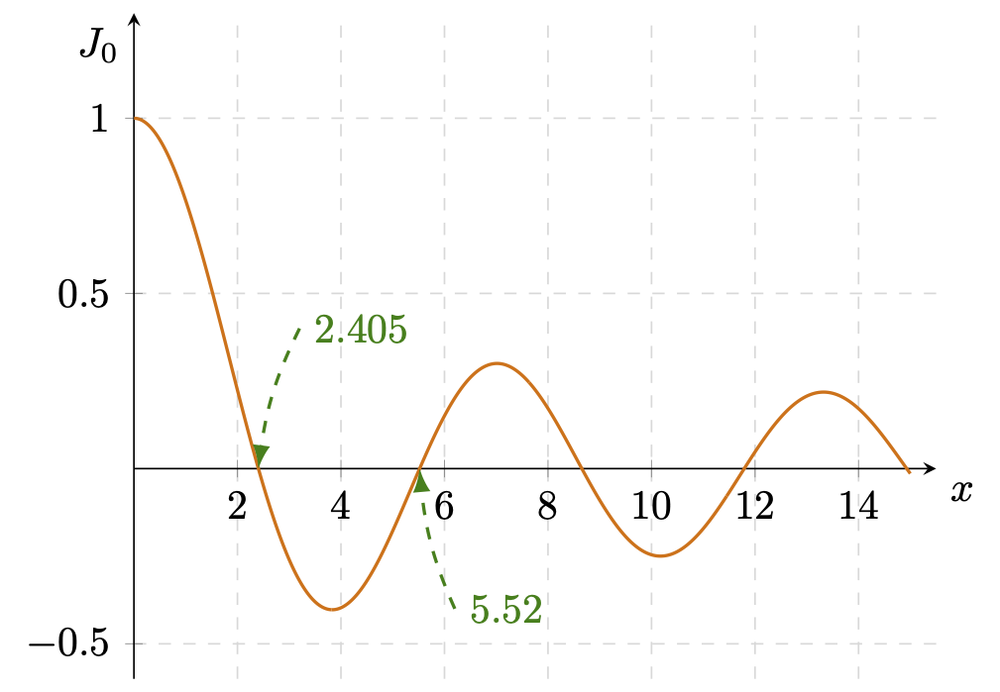
우리는 다음과 같은 흥미로운 결과를 얻게 된다. 진동수를 를 충분히 높게 설정하면, 축전지 중앙의 전기장의 방향과 가장자리의 방향이 반대 방향이 된다. 예를 들어 축전지 바깥쪽 가장자리에서 \(ωr/c=4\) 가 되도록 \(\omega\) 값을 정한다면 커패시터의 가장자리는 그림 13.35 에서 \(x=4\) 에 해당한다. 축전지의 반지름이 \(a\) 이므로 \(\omega = 4c/a\) 이다. 이 경우 판의 가장자리에서 전기장이 우리가 예상하는 방향과 반대 방향으로 상당히 큰 크기를 갖게 된다. 이것은 고주파에서 축전지에 일어날 수 있는 끔찍한 일이다. 매우 높은 진동수에서는 전기장의 방향이 축전지 중심에서 나갈 때 앞뒤로 여러 번 진동한다. 또한 이러한 전기장과 연관된 자기장도 존재한다. 축전지가 고주파에서 이상적이지 않는 것은 놀라운 일이 아니다. 우리는 그것이 커패시터나 인덕턴스 가운데 무엇에 더 가까운지 의아해 할 수도 있다. 또한 축전지의 가장자리에서 발생하는, 우리가 간과한 더욱 복잡한 효과들이 존재한다는 점을 강조해야 한다. 예를 들어, 가장자리를 넘어 파동이 방사되어 우리가 계산한 것보다 필드가 더욱 복잡해지지만, 지금은 그 효과에 대해 생각하지 않을 것이다.
우리는 커패시터에 대한 등가회로를 찾아볼 수 있지만, 진동수가 낮은 전기장을 위해 설계된 커패시터는 고진동수에서 쓸모가 없다고 인정하는 것이 더 나을지도 모른다. 그러한 물체의 작동을 고진동수에서 다루고자 한다면, 회로를 다루기 위해 만든 맥스웰 방정식에 대한 근사값을 포기하고, 공간의 장을 완전히 기술하는 완전한 방정식 집합으로 돌아가야 한다. 이상화된 회로 요소를 다루는 대신, 실제 도체를 있는 그대로 다루어야 하며, 그 사이에 있는 공간들의 모든 필드를 고려해야 한다. 예를 들어, 고주파에서 공진 회로를 원한다면 코일과 병렬 플레이트 커패시터를 사용하여 설계하려고 시도하지 않을 것이다.
이미 언급했듯이 평행판 커패시터는 커패시터와 인덕턴스 양쪽의 일부 측면을 모두 가지고 있다. 전기장이 있을 경우 판 표면에 전하가 존재하고, 자기장이 있을 경우 역방향 기전력이 존재한다. 이미 공명 회로가 있을 가능성이 있는가? 물론 그렇다. 디스크 가장자리 내부의 어느 반경에서 전기장 패턴이 \(0\) 으로 떨어지는 진동수를 선택한다. 즉 \(\omega a/c\) 를 \(2.405\) 보다 크게 선택한다. 판에 동축인 어떤 원에서 전기장은 \(0\) 이 된다. 이제 얇은 금속 시트를 구해서 커패시터 판 사이에 딱 맞도록 자른다. 그런 다음 전기장이 0 이 되는 원에 맞는 반지름을 갖는 원통으로 구부린다. 그곳에 전기장이 없기 때문에, 이 전도성 실린더를 제자리에 설치하면 전류가 흐르지 않으며, 전기장과 자기장에도 변화가 없다. 우리는 축전지에 직접 단락을 삽입할 수 있었으며, 아무것도 변경하지 않았다. 그리고 우리는 내부에 전기와 자기장이 들어 있는 완전한 원통형 캔을 가지고 있으며 외부 세계와 전혀 연결되지 않았다. 우리 캔 밖에 있는 판의 가장자리를 버리더라도 내부 필드는 변하지 않으며, 커패시터 리드를 제거해도 마찬가지이다. 우리가 남은 것은 전기와 자기장이 내부에 있는 닫힌 캔이며, 이는 그림 13.36 (a) 에 표현된 바와 같다. 전기장은 진동수 \(\omega\) 로 앞뒤로 진동하고 있으며, 이는 캔의 직경을 결정한 것이다. 진동하는 \(E\) 장의 진폭은 캔 축으로부터의 거리와 함께 변하며, 이는 그림 13.36 (b) 그래프이다. 또한 축을 중심으로 원을 그리며 전기장과 위상이 \(\pi/2\) 차이나게 일정하게 진동하는 자기장이 있다.
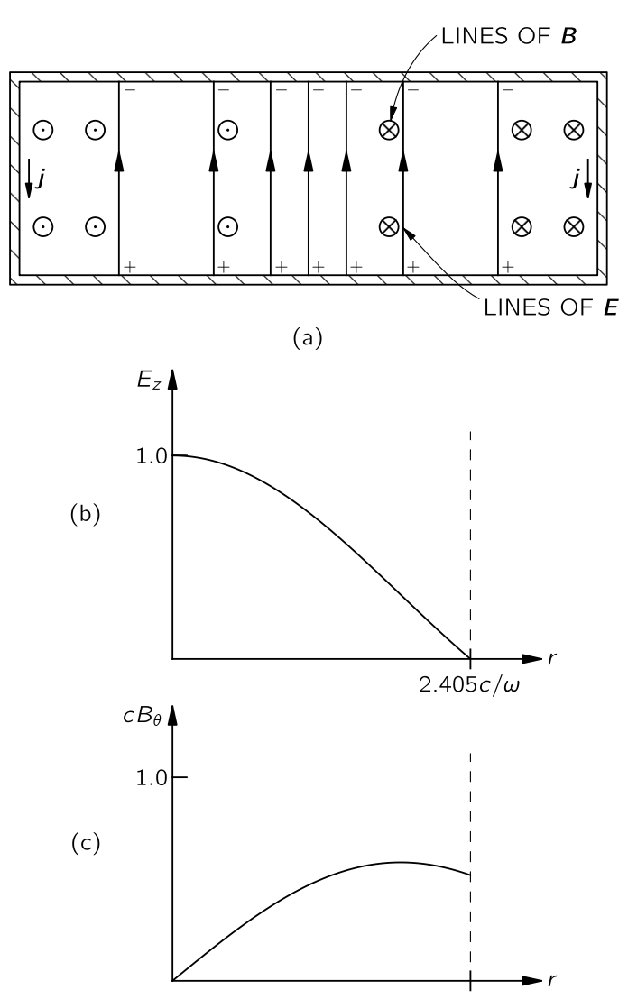
외부 연결이 없는 캔 안에 전기와 자기장을 어떻게 가질 수 있을까? 전기장과 자기장이 스스로 유지되는 이유는, 변화하는 \(\boldsymbol{E}\) 가 \(\boldsymbol{B}\) 를 만들고 변화하는 \(\boldsymbol{B}\) 가 \(\boldsymbol{E}\) 를 만들기 때문이며, 모두 맥스웰 방정식에 따라 그렇다. 자기장은 유도적 측면을 가지고 전기장은 정전용량적 측면을 가지고 있다. 이들은 함께 공명 회로와 같은 것을 만든다. 우리가 설명한 조건은 캔의 반지름이 정확히 \(2.405c/\omega\) 일 경우에만 발생한다는 점에 유의하라. 주어진 반지름의 캔에 대해, 진동 전기장과 자기장은 우리가 설명한 방식대로 그 특정 주파수에서만 자체적으로 유지된다. 따라서 반지름 \(r\) 인 원통형 캔은 진동수
\[ \omega_0=2.405\dfrac{c}{r}. \tag{13.53}\]
에서 공명한다. 우리는 캔이 완전히 닫힌 후에도 필드가 동일한 방식으로 계속 진동한다고 말했다. 그것은 정확히 맞지는 않다. 캔의 벽이 완벽한 전도체라면 가능하지만 실제 캔의 경우 캔 내부 벽에 존재하는 진동 전류는 재료의 저항 때문에 에너지를 잃게 된다. 장의 진동은 점차 사라질 것이다. 그림 13.36 로부터 공동 내부에 전기와 자기장과 관련된 강한 전류가 반드시 존재한다는 것을 알 수 있다. 수직 전기장이 캔의 상단 및 하단 판에서 갑자기 멈추기 때문에 그곳에서 큰 발산이 발생한다; 따라서 그림 13.36 (a) 와 같이 캔 내부 표면에 양전하와 음전하가 반드시 존재해야 한다. 전기장이 역전될 때 전하도 역전되어야 하므로, 캔의 상판과 하판 사이에 교류 전류가 있어야 한다. 이러한 전하들은 그림에 표시된 대로 캔의 측면으로 흘러야 한다. 우리는 또한 자기장이 어떻게 변하는지를 고려함으로써 캔의 측면에 전류가 있어야 함을 알 수 있다. 그림 13.36 (c) 의 그래프는 자기장이 캔 가장자리에서 갑자기 0으로 감소한다는 것을 보여준다. 그러한 급격한 자기장 변화는 벽에 전류가 있을 때만 발생할 수 있다. 이 전류는 캔의 상단 및 하단 플레이트에 교대 전하를 발생시킨다.
캔의 수직 측면에서 전류를 발견한 것에 대해 궁금해 할 수도 있다. 앞서 전기장이 0인 지역에 이러한 수직 변을 도입했을 때 아무것도 변하지 않을 것이라고 말했다. 하지만, 처음 캔의 측면을 넣었을 때, 상단과 하단 플레이트가 그 너머로 확장되어 캔 외부에도 자기장이 존재했음을 기억하라. 우리가 캔 가장자리 너머에 있는 커패시터 플레이트 부품을 버렸을 때에만 수직 벽 내부에 순 전류가 나타나게 되었다.
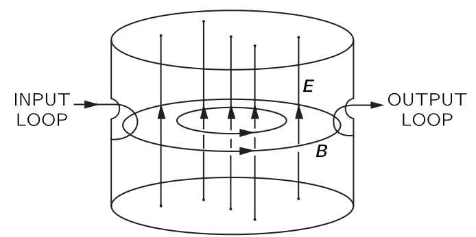
완전히 밀폐된 캔 안의 전기장과 자기장이 에너지 손실로 인해 점차 사라지겠지만, 캔에 작은 구멍을 뚫고 약간의 전기에너지를 넣어 손실을 보충하면 이를 막을 수 있다. 작은 와이어를 사용하여 캔 측면의 구멍을 통해 찔러 내부 벽에 고정한 뒤, 그림 13.37 과 같이 작은 고리를 만들도록 고정한다. 우리가 이제 이 전선을 고주파 교류 전원에 연결하면, 이 전류가 공동의 전기장과 자기장으로 에너지를 결합시켜 진동을 지속시킨다. 이는 물론, 구동 소스의 주파수와 캔의 공진 주파수가 같을 경우만 발생한다. 소스가 잘못된 주파수에 있으면 전기장과 자기장이 공명하지 않으며, 캔 안의 전기장은 매우 약해진다.
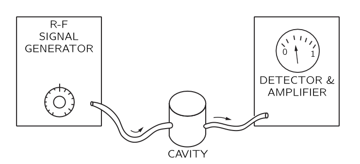
공진 거동은 캔에 또 다른 작은 구멍을 뚫고 다른 커플링 루프에 연결함으로써 쉽게 확인할 수 있다(그림 13.37), 이 루프를 통과하는 변화하는 자기장은 루프 내에서 유도기전력을 생성한다. 이 루프가 외부 측정 회로에 연결된다면, 전류는 캐비티 내 필드의 강도에 비례하게 된다. 예를 들어, 이제 우리 공동의 입력 루프를 그림 13.38 에 표시된 바와 같이 RF 신호 발생기에 연결한다고 가정하자. 신호 발생기에는 발전기 전면에 있는 노브를 조절함으로써 진동수를 조절할 수 있는 교류 전원이 포함되어 있다. 그런 다음 우리는 캐비티의 출력 루프를 전류를 측정하는 장치이에 연결한다. 이제 신호 발생기의 주파수에 대한 출력 전류를 측정하면, 그림 13.39 의 그것과 것과 같은 곡선을 얻는다. 출력 전류는 공동의 공진주파수 \(\omega_0\) 와 매우 가까운 진동수 이외에는 매우 작다. 공진 곡선은 \(\mathrm{I}\).23 공명 에서 설명한 것과 매우 유사하다. 저. 그러나 공진의 폭은 인덕턴스와 커패시터로 구성된 공진 회로에서 일반적으로 발견되는 것보다 훨씬 좁다. 즉 공동의 \(Q\) 가 매우 높다. 캐비티의 내부 벽이 은과 같이 전도성이 매우 우수한 재료로 만들어져 있다면 \(Q\) 가 100,000 이상에 달하는 경우도 드물지 않다.
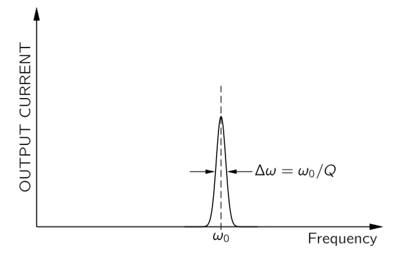
\(\mathrm{II}\).23–4 공동 모드
이제 실제 캔으로 측정하여 이론을 확한다고 하자. 지름이 3.0 인치이고 높이가 약 2.5 인치인 원통형 캔을 사용한다. 그 캔은 그림 13.37 그림과 같이 입력 및 출력 루프가 장착되어 있다. 이것에 대한 기대되는 공진 주파수는 식 13.53 에 따라 \(f_0 = \omega_0/2π = 3010\,\text{MHz}\) 이다. 신호 발생기의 주파수를 약 \(3000\,\text{MHz}\) 로 설정하고 공명을 찾을 때까지 조금씩 증가시키면 최대 출력 전류가 \(3050\,\text{MHz}\) 에서 발생하는 것을 볼 수 있다. 이는 예측된 공진 주파수와 매우 가깝지만 정확히 동일하지는 않다. 불일치에는 여러 가지 가능한 이유가 있다. 아마도 결합 루프에 삽입하기 위해 절단한 구멍 때문에 공진 주파수가 약간 변경된 것일 수 있다. 하지만 조금만 생각해보면, 그 구멍들이 공진 주파수를 약간 낮춰야 함을 알 수 있으므로, 그것이 이유가 될 수 없다. 신호 발생기의 주파수 보정에 약간의 오류가 있거나, 혹은 공동의 직경 측정이 충분히 정확하지 않을 수도 있다. 어쨌든 두 값은 꽤나 가깝다.
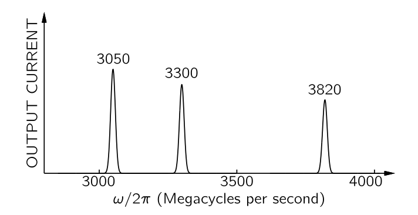
훨씬 더 중요한 것은 신호 발생기의 주파수를 3000 MHz 에서 다소 더 크게 변화시킬 때 발생하는 일이다. 그렇게 하면 그림 13.40 에 표시된 결과를 얻을 수 있다. 우리는 3000 MHz 근처에서 예상한 공명 외에도 3300 MHz 근처에서 공명이 존재하고, 3820 MHz 메가사이클 근처에서 또 하나가 존재한다는 것을 발견한다. 이러한 추가 공명은 무엇을 의미할까? 그림 13.35 에서 단서를 얻을 수 있다. 베셀 함수의 첫 번째 영점이 캔의 가장자리에서 발생한다고 가정해 왔지만, 두 번째 베셀 함수의 영점이 캔의 가장자리에 해당할 수도 있으며, 이 경우 캔의 중심에서 가장자리까지 이동할 때 전기장이 완전한 진동을 한 번 발생하게 된다(그림 13.41 에 표시된 바와 같이). 이는 진동하는 장에 대한 또 다른 가능한 모드이다. 우리는 확실히 그 캔이 그런 방식으로 울려 퍼질것이라는 것을 이해 할 수 있다. 하지만 주의하라. 베셀 함수의 두 번째 영점은 \(x=5.52\) 에서 발생하며, 이는 첫 번째 영의 값보다 두 배 이상 크고, 따라서 이 모드의 공진 주파수는 6000 MHz 보다 커야 한다. 의심할 여지 없이 이 주파수에서 그것을 찾을 것이지만, 3300 MHz 에서 관찰되는 공명에 대한 것은 아니다.
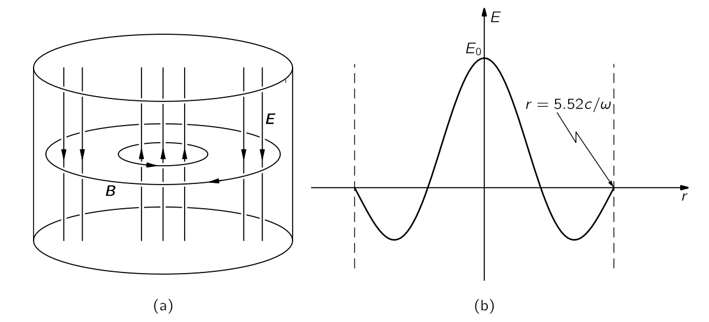
문제는 공명 공동의 거동에 대한 분석에서 전기장과 자기장의 가능한 기하학적 배열을 하나만 고려했다는 점이다. 우리는 전기장이 수직이고 자기장이 수평 원에 있다고 가정했다. 하지만 다른 장의 구성도 가능하다. 유일한 요구 사항은 장이 캔 내부의 맥스웰 방정식을 만족하고 전기장이 벽과 직각으로 맞물리는 것이다. 우리는 캔의 상단과 하단이 평평한 경우를 고려했지만, 상단과 하단이 곡선형라도 상황이 완전히 달라지지는 않을 것이다. 사실, 그 캔은 어떻게 위와 아래가 어느 쪽인지, 그리고 어느 쪽이 어느 쪽인지 알 수 있는가? 실제로, 전기장이 캔의 직경을 대체로 가로지르는 캔 내부의 진동 모드가 있다(그림 13.42).
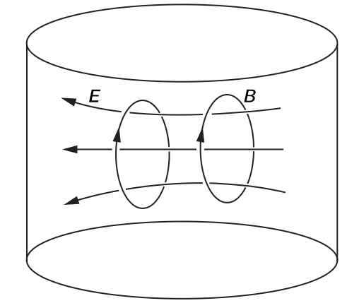
이 모드의 고유 주파수가 우리가 고려한 첫 번째 모드의 고유 주파수와 크게 다르지 않은 이유를 이해하는 것은 그리 어렵지 않다. 우리의 원통형 공동 대신에, 우리는 한 면이 3인치인 정육면체인 공동을 사용했다고 가정해 보십시오. 이 캐비티는 세 가지 다른 모드를 가질 것이 분명하지만, 모두 동일한 주파수를 가진다. 전기장이 대체로 위아래로 흐르는 모드는 전기장이 좌우로 향하는 모드와 동일한 주파수를 가질 것이다. 이제 큐브를 원통으로 왜곡하면, 이러한 주파수를 다소 변경하게 된다. 우리는 여전히 그것들을 너무 많이 변경하지 않을 것으로 예상한다, 다만 공동의 크기를 대체로 동일하게 유지한다면. 따라서 그림 13.42 의 모드 진동수는 그림 13.37 의 모드와 크게 다르지 않아야 한다. 우리는 그림 13.42 에 표시된 모드의 고유 진동수를 상세히 계산할 수 있었지만, 지금은 그렇게 하지 않겠다. 계산을 해 보면 우리가 가정한 차원에 대해 공진 주파수가 3300 MHz 에서 관측된 공진과 매우 가깝게 나타난다.
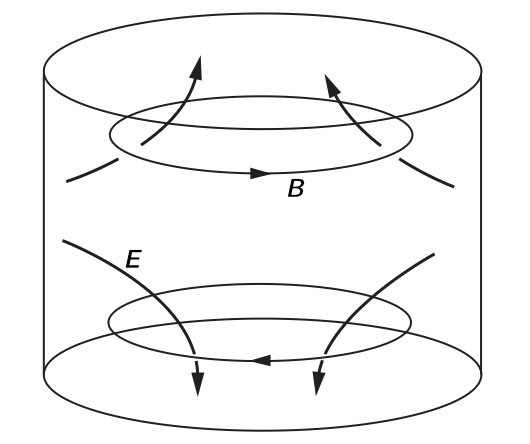
유사한 계산에 따르면, 우리가 약 3800 MHz 근처에서 발견한 다른 공진 주파수에 아직도 또 다른 모드가 존재한다. 이 모드에서는 전기장과 자기장이 그림 13.43 와 같다. 전기장은 공동을 완전히 통과할 필요가 없다. 보여진 바와 같이 양쪽에서 끝까지 진행된다.
주파수가 점점 높아지면 점점 더 많은 공명을 발견하게 될 것이다. 다양한 모드가 많이 존재하며, 각각은 전기장과 자기장의 특정한 복잡한 배열에 해당하는 서로 다른 공진 주파수를 갖게 된다. 각각의 장 배열을 공명 모드 (resonant mode)라고 한다. 각 모드의 공진 주파수는 공동 내 전기장과 자기장에 대한 맥스웰 방정식을 풀어 계산할 수 있다.
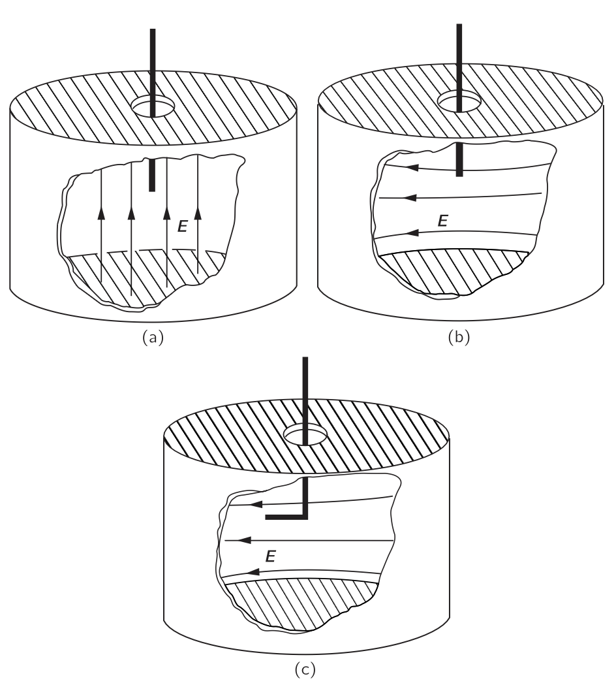
특정 진동수에서 공명이 있을 때, 어떤 모드가 여기되고 있는지 어떻게 알 수 있을까? 한 가지 방법은 작은 구멍을 통해 작은 와이어를 구멍에 삽입하는 것이다. 전기장이 와이어를 따라 위치한다면, 그림 13.44 (a) 와 같이, 와이어에 비교적 큰 전류가 흐르게 되어 전기장의 에너지를 소모하고, 공진이 억제된다. 전기장이 그림 13.44 (b) 와 같이 나타나면, 와이어는 훨씬 작은 영향을 미친다. 우리는 와이어의 끝을 구부림으로써 이 모드에서 필드가 어느 방향으로 가리키는지 찾을 수 있으며, 이는 그림 13.44 (c) 에 표시되어 있다. 그렇다면, 와이어를 회전시킬 때, 와이어의 끝이 \(\boldsymbol{E}\) 와 평행할 때 큰 효과가 발생하고, \(\pi/2\) 에 도달하도록 회전시킬 때 작은 효과가 발생한다.
\(\mathrm{II}\).23–5 공동과 공명 회로
우리가 설명하고 있는 공진 공동은 인덕턴스와 커패시터로 구성된 일반적인 공진 회로와는 상당히 달라 보이지만, 두 공진 시스템은 밀접하게 관련되어 있다. 그들은 모두 같은 계열의 구성원이며, 전자기 공진기의 두 극단적인 경우에 불과하다. 그리고 이 두 극단 사이에는 많은 중간 경우가 존재한다. 예를 들어 그림 13.45 (a) 와 같이 인덕턴스와 병렬로 연결된 커패시터의 공진 회로를 생각하자. 이 회로의 공지 주파수 \(\omega_0=1/\sqrt{LC}\) 이다. 이 회로의 공진 주파수를 높이려면, 인덕턴스 \(L\) 을 낮추면 된다. 한 가지 방법은 코일의 회전 횟수를 줄이는 것이다. 하지만 우리는 이 방향으로는 여기까지만 갈 수 있습니다. 결국 우리는 마지막 턴에 도달하게 되며, 콘덴서의 상하판을 연결하는 전선 한 가닥만 있게 된다. 정전용량을 작게 함으로써 공진 주파수를 더욱 높일 수 있지만, 여러 인덕턴스를 병렬로 배치함으로써 인덕턴스를 계속 감소시킬 수도 있다. 두 개의 원턴 인덕턴스가 병렬로 있을 경우 각 턴의 인덕턴스가 절반에 불과하다. 따라서 인덕턴스가 단일 회전으로 감소된 경우, 콘덴서의 상부 플레이트에서 하부 플레이트로 다른 단일 루프를 추가함으로써 공진 주파수를 계속 높일 수 있다. 예를 들어, 그림 13.45 (b) 는 6개의 이러한 “single-turn inductances”에 의해 연결된 콘덴서 플레이트를 보여준다. 만약 우리가 이러한 와이어를 많이 계속 추가한다면, 우리는 그림의 (c) 부분에 표시된 완전히 밀폐된 공진 시스템으로 전환할 수 있으며, 이는 원통형으로 대칭인 물체의 단면을 그린 그림입니다. 우리의 인덕턴스는 이제 콘덴서 플레이트의 가장자리에 부착된 원통형 빈 캔이다. 전기장과 자기장은 그림에 표시된 대로이다. 그러한 물체는 물론 공명 공동이다. 그것은 “loaded” cavity 라고 한다. 하지만 우리는 여전히 이를 \(L‐C\) 회로라고 생각할 수 있으며, 용량 구간은 전기장의 대부분을 찾는 영역이고, 인덕턴스 구간은 자기장의 대부분을 찾는 영역이다.
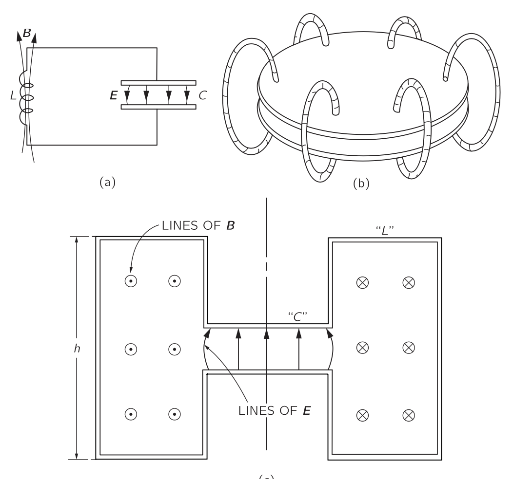
그림 13.45 (c) 에서 공진기의 주파수를 더욱 높이고자 한다면, 인덕턴스 \(L\) 을 계속 감소시키면 된다. 이를 위해서는 인덕턴스 섹션의 기하학적 치수를 감소시켜야 하며, 예를 들어 도면에서 차원 \(h\) 를 감소시켜야 합니다. \(h\) 가 감소함에 따라 공명 주파수가 증가합니다. 결국, 물론, 우리는 높이 \(h\) 가 콘덴서 플레이트 사이의 간격과 딱 같은 상황에 이르게 될 것이다. 그렇다면 우리는 원통형 캔 하나뿐이며, 우리의 공진 회로는 그림 13.36 의 공동 공명기가 되었다.
원래 그림 13.45 의 \(L‐C\) 공진 회로에서 전기장과 자기장이 상당히 분리되어 있음을 확인할 수 있다. 우리는 공진 시스템을 점차 수정하여 점점 더 높은 주파수를 만들면서, 자기장이 전기장에 점점 더 가까워지게 되었고, 결국 공동 공진기에서는 두 요소가 상당히 혼합된다.
이 장에서 언급한 캐비티 공진기는 원통형 캔이었지만, 원통형 형태에는 마법 같은 것이은 없다. 어떠한 형태의 캔도 전기 및 자기장의 다양한 진동 모드에 해당하는 공명 주파수를 가지고 있다. 예를 들어, 그림 13.46 에 표시된 “공극”은 고유한 공진 주파수 집합을 갖게 되지만, 계산하기는 다소 어려울 것이다.
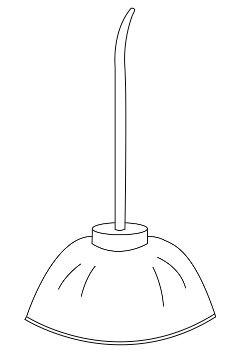
\(\textrm{II}\).24 웨이브가이드
\(\mathrm{II}\).24–1 전송선
지난 장에서는 회로의 결합된 소자들이 매우 높은 주파수에서 작동될 때 어떤 일이 일어나는지 연구했으며, 그 결과 공진 회로를 내부 필드가 공명하는 공동으로 대체될 수 있음을 알게 되었다. 또 다른 흥미로운 기술적 문제는 하나의 물체를 다른 물체와 연결하는 것으로, 이를 통해 전자기 에너지가 서로 전달될 수 있다. 저주파 회로에서는 연결을 전선으로 하지만, 이 방법은 고주파에서는 그다지 잘 작동하지 않는다. 왜냐하면 회로가 주변 모든 공간으로 에너지를 방사하고, 에너지가 어디로 갈지 제어하기 어렵기 때문이다. 전선 주위에 장이 퍼져 있으며, 전류와 전압이 전선에 의해 잘 “유도”되지 않는다. 이 장에서는 물체가 고주파에서 상호 연결될 수 있는 방법을 살펴보고자 한다. 적어도, 그것은 우리 주제를 제시하는 한 방법이다.
다른 말로 하면, 우리는 자유 공간에서 파동의 거동에 대해 논의해 왔다. 이제 진동하는 필드가 하나 이상의 차원에 제한될 때 어떤 일이 일어나는지 확인하고자 한다. 우리는 장이 두 차원에서 제한되고 세 번째 차원에서 자유롭게 방출될 때, 그들이 파동을 통해 전파되는 흥미로운 새로운 현상을 발견하게 될 것이다. 이것은 “guided waves”이며, 이 장의 주제이다.
송전선에 대한 일반적인 이론을 알아본다. 교외에 송전탑으로 이어지는 일반 전력 전송선은 전력의 일부를 방출하지만, 전력 주파수( 50–60 Hz)가 매우 낮아 이 손실은 심각하지 않다. 금속 파이프로 전선을 둘러싸면 방사선을 차단할 수 있지만, 사용되는 전압과 전류가 매우 크고 비싸며 무거운 파이프가 필요하기 때문에 이 방법은 전력선에 실용적이지 않다. 그렇게 간단한 “open lines” 이 사용된다.
다소 높은 주파수—예를 들어 몇 KHz 정도—의 경우, 방사선은 이미 심각할 수 있다. 하지만, 단거리 전화 연결에 사용되는 것처럼 꼬인 쌍선(twisted-pair) 을 사용함으로써 이를 줄일 수 있다. 하지만 높은 주파수에서는 방사선이 곧 견디기 어려워지며, 이는 전력 손실 때문이거나 에너지가 원하지 않는 다른 회로에 나타나기 때문이다. 몇 KHz 에서 수백 MHz 에 이르는 주파수의 경우, 전자기 신호와 전력은 일반적으로 원통형 “외부 도체” 또는 “실드” 내부의 와이어로 구성된 동축선을 통해 전송된다. 다음 처리는 두 개의 평행 도체로 구성된 전송선에 적용되지만, 우리는 동축선을 참조하여 수행하겠습니다.
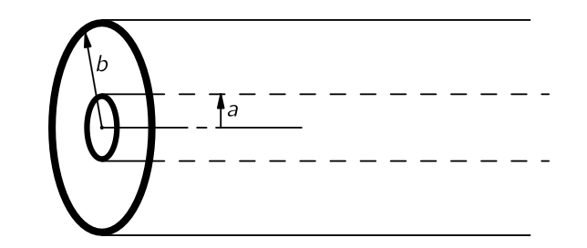
우리는 그림 13.47 에서 볼 수 있는, 중앙 도체가 얇은 속이 빈 원통이라고 가정하는 가장 단순한 동축선과, 내부 도체와 같은 축에 있는 또 다른 얇은 실린더인 외부 도체를 포함하는 가장 단순한 동축선을 생각한다. 우리는 상대적으로 낮은 주파수에서 선이 대략 어떻게 동작하는지 파악하는 것부터 시작하자. 우리는 앞서 두 개의 해당 도체가 단위 길이당 일정한 인덕턴스를 가지고 있거나 단위 길이당 일정한 용량을 가진다고 말했을 때, 저주파 거동 중 일부를 이미 설명한 바 있다. 실제로 모든 전송선의 저주파 거동은 단위 길이당 인덕턴스(\(L_0\))와 단위 길이당 용량(\(C_0\))을 통해 설명 할 수 있다. 그렇다면 \(\mathrm{II}\).22-6 사다리 네트워크 에서 논의된 바와 같이 \(L‐C\) 필터의 극한으로서 선을 분석할 수 있다. 우리는 \(L_0\Delta x\) 라는 작은 직렬 원소와 작은 분기(shunt) 용량 \(C_0\Delta x\) 를 사용하여 선을 모방하는 필터를 만들 수 있으며, 여기서 \(\Delta x\) 는 선 길이의 한 요소이다. 무한 필터에 대한 우리의 결과를 사용하면, 선을 따라 전기 신호가 전파된다는 것을 알 수 있다. 하지만 그 접근 방식보다는, 미분 방정식의 관점에서 그 선을 바라보는 것이 좋은것 같다.
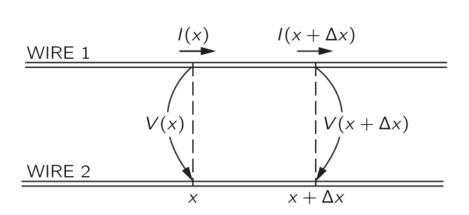
전송선상의 두 인접한 지점, 즉 선의 시작점으로부터 \(x\) 와 \(x+\Delta x\) 사이의 거리에서 일어나는 일을 보자. 두 전도체 사이의 전압 차이를 \(V(x)\) 라고 하고, “핫” 전도체를 따라 흐르는 전류를 \(I(x)\) 라고 하자(그림 13.48). 전선의 전류가 변동하면, 인덕턴스로 인해 \(x\) 에서 \(x+\Delta x\) 까지의 작은 선 구간에 전압 강하가 일어난다.
\[ \Delta V = V(x+\Delta x)−V(x) = −L_0 \Delta x \dfrac{dI}{dt}. \]
또는, \(Δx \to 0\) 극한을 취하면
\[ \dfrac{\partial V}{\partial x} = −L_0\dfrac{\partial I}{\partial t}. \tag{13.54}\]
변화하는 전류로 인해 전압에 굴곡이 생긴다.
다시 그 그림으로 가서, \(x\) 에서 전압이 변하고 있다면 해당 영역의 용량에 전하가 공급되고 있어야 한다. \(x\) 와 \(x+\Delta x\) 사이의 작은 선 조각을 취하면, 그 위의 전하는 \(q=C_0 \Delta x V\) 입니다. 이 전하의 시간 변화율은 \(C_0 \Delta x dV/dt\) 이지만, 전하가 변하는 것은 전류 \(I(x)\) 가 소자로 들어가는 전류 I(x+Δx)$ 가 외부와 다를 경우에만 변한다. 차이를 \(\Delta I\) 라고 하면
\[ \Delta I=−C_0\Delta x\dfrac{dV}{dt}. \]
\(\Delta x \to 0\) 극한을 생각하면
\[ \dfrac{\partial I}{\partial x} = −C_0\dfrac{\partial V}{\partial t}. \tag{13.55}\]
따라서 전하 보존은 전류의 구배가 전압의 시간 변화율에 비례한다는 것을 의미한다.
식 13.54 과 식 13.55 는 전송선의 기본 방정식이다. 원한다면 도체 내 저항의 효과나 도체 사이 절연을 통한 전하 누출 효과를 포함하도록 수정할 수 있지만, 현재 논의에서는 간단한 예시만을 사용하자. 두 전송선 방정식은 t에 대해 하나를, x에 대해 하나를 미분하고 V 또는 I를 제외함으로써 결합할 수 있습니다. 그렇다면 우리는 둘 중 하나가 있습니다.
\[ \dfrac{\partial^2 V}{\partial x^2} = C_0L_0 \dfrac{\partial^2 V}{\partial t^2}, \tag{13.56}\]
또는
\[ \dfrac{\partial^2 I}{\partial x^2} =C_0L_0\dfrac{\partial^2 I}{\partial t^2} \tag{13.57}\]
다시 한 번 \(x\) 에 대한 파동 방정식이 나타난다. 균일한 전송선에서는 전압과 전류는 파동으로 선을 따라 전파된다. 선을 따라 전압은 \(V(x,t)=f(x−vt)\) 또는 \(V(x,t)=g(x+vt)\) 형태이거나, 두 값의 합이어야 한다. 그렇다면 속도 \(v\) 는 얼마일까? 우리는 \(\partial^2/\partial t^2\) 항의 계수가 \(1/v^2\) 임을 안다. 따라서
\[ v=\dfrac{1}{\sqrt{L_0C_0}}. \tag{13.58}\]
우리는 귀하가 선상의 각 파동에 대한 전압이 그 파동의 전류에 비례하고, 비례 상수가 단지 특성 임피던스 z0임을 보여드릴 것입니다. V+와 I+를 호출하면, 플러스 x 방향으로 흐르는 파동의 전압과 전류를 얻을 수 있습니다.
V+=z0I+.( 24.6)
마찬가지로, -x 방향으로 가는 파동에 대해 관계는
V−=z0I−.
특성 임피던스—우리가 필터 방정식에서 밝혀낸 바와 같이—는 다음과 같이 주어진다
z0=L0C0−−−√,(24.7)
그리고 따라서 순수한 저항입니다.
전송 라인의 전파 속도 v와 특성 임피던스 z0를 찾기 위해서는 단위 길이당 인덕턴스와 용량을 알아야 합니다. 우리는 동축 케이블에 대해 쉽게 계산할 수 있으므로, 그 진행 상황을 지켜보겠습니다. 인덕턴스에 대해서는 섹션 17–8의 아이디어를 따르고, 부피 위에서 ε0c2B2/2를 적분하여 얻는 자기 에너지와 12LI2를 동일하게 설정합니다. 중심 도체가 전류 I를 전달한다고 가정하면, 우리는 B=I/2πε0c2r이며, 여기서 r은 축으로부터의 거리이다. 부피 원소로 두께가 dr이고 길이가 l인 원통형 껍질을 사용하면, 자기 에너지에 대해
U=ε0c22∫ba(I2πε0c2r)2l2πrdr,
여기서 a와 b는 각각 내부 도체와 외부 도체의 반경입니다. 적분을 수행하면, 우리는 얻습니다
U=I2l4πε0c2lnba.( 24.8)
에너지를 12LI2로 설정하면, 우리는 찾습니다
L=l2πε0c2lnba.( 24.9)
이는 선의 길이 l에 비례하므로, 단위 길이 L0당 인덕턴스는
L0=ln(b/a)2πε0c2.( 24.10)
우리는 원통형 콘덴서의 전하를 구했습니다(섹션 12–2를 참조하십시오). 이제 전하를 전위 차이로 나누면, 우리는
C=2πε0lln(b/a).
단위 길이 C0당 용량은 C/l입니다. 이 결과를 Eq와 결합합니다. (24.10), 우리는 곱 L0C0가 1/c2와 동일함을 확인하므로, v=1/L0C0−−−−−√는 c와 같습니다. 그 파동은 빛의 속도로 선을 따라 이동합니다. 우리는 이 결과가 우리의 가정에 의존한다는 점을 지적합니다: (a) 도체 사이의 공간에 유전체나 자성 물질이 없다는 것, 그리고 (b) 전류가 모두 도체 표면에 존재한다는 것(완전한 도체의 경우와 같이). 우리는 나중에 고주파에서 좋은 도체에 대해 모든 전류가 완전 도체와 마찬가지로 표면에 직접 분포한다는 것을 알게 될 것이며, 따라서 이 가정은 타당합니다.
이제 (a)와 (b) 가정이 올바른 한, 곱 L0C0는 모든 평행 전도체 쌍에 대해 1/c2와 같다는 점이 흥미롭습니다—예를 들어, 타원형 외부 도체 내부의 육각형 내부 도체에 대해서도 마찬가지입니다. 단면이 일정하고 그 사이의 공간에 물질이 없으면, 파동은 빛의 속도로 전파됩니다.
특성 임피던스에 대해 그러한 일반적인 진술을 할 수 없습니다. 동축 라인에 대해서는, 그것은
Z0=ln(b/a)2πε0c.( 24.11)
계수 1/ε0c는 저항의 차원을 가지고 있으며 120π 옴과 같습니다. 기하급수 ln(b/a)은 치수에 로그적으로만 의존하므로, 동축선—대부분의 선—에 대해 특성 임피던스는 약 50옴에서 수백 옴에 이르는 전형적인 값을 가집니다.